<title>Lastafel op heftafel</title>
<meta name="claude:viewport-fit-sides" content="cover">
<link rel="preconnect" href="https://fonts.googleapis.com"><link rel="preconnect" href="https://fonts.gstatic.com" crossorigin>
<link rel="stylesheet" href="https://fonts.googleapis.com/css2?family=Barlow+Condensed:wght@500;600;700&family=Source+Sans+3:wght@400;600;700&family=JetBrains+Mono:wght@400;600&display=swap">
<style>
/* Werkplaatsdossier: een titelblok zoals op een tekening, staalgrijs papier, signaalgeel alleen voor wat je moet zien */
:root {
  --bg: #e9edef; --vlak: #ffffff; --vlak2: #f4f6f7; --inkt: #161a1e; --zacht: #56616b; --lijn: #c6ced4; --lijn2: #dde3e7;
  --geel: #c98a10; --geel-vlak: #f6e3b3; --geel-inkt: #3a2a05; --zwart: #1d2125; --op-zwart: #f2f4f5;
  --kop: "Barlow Condensed", "Arial Narrow", Arial, sans-serif; --tekst: "Source Sans 3", "Segoe UI", Arial, sans-serif; --mono: "JetBrains Mono", Consolas, monospace;
}
@media (prefers-color-scheme: dark) { :root:not([data-theme="light"]) {
  --bg: #111417; --vlak: #1a1f23; --vlak2: #20262b; --inkt: #e8ecee; --zacht: #9ba6af; --lijn: #333c43; --lijn2: #283036;
  --geel: #e6a930; --geel-vlak: #3a2e14; --geel-inkt: #f6e3b3; --zwart: #0b0d0f; --op-zwart: #e8ecee; color-scheme: dark } }
:root[data-theme="dark"] {
  --bg: #111417; --vlak: #1a1f23; --vlak2: #20262b; --inkt: #e8ecee; --zacht: #9ba6af; --lijn: #333c43; --lijn2: #283036;
  --geel: #e6a930; --geel-vlak: #3a2e14; --geel-inkt: #f6e3b3; --zwart: #0b0d0f; --op-zwart: #e8ecee; color-scheme: dark }
* { box-sizing: border-box }
body { background: var(--bg); color: var(--inkt); font: 16px/1.55 var(--tekst); }
body::before { content: ""; position: fixed; inset: 0 0 auto; height: env(safe-area-inset-top, 0px); z-index: 10; background: var(--zwart) }
.wrap { max-width: 1180px; margin: 0 auto; padding-left: max(16px, env(safe-area-inset-left, 0px)); padding-right: max(16px, env(safe-area-inset-right, 0px)) }
h1, h2, h3 { font-family: var(--kop); font-weight: 700; letter-spacing: .01em; line-height: 1.1; text-wrap: balance; margin: 0 }
h2 { font-size: clamp(30px, 4vw, 40px) } h3 { font-size: 22px; font-weight: 600 }
a { color: inherit; text-decoration-color: var(--geel); text-underline-offset: 3px }
code { font-family: var(--mono); font-size: .86em; background: var(--vlak2); padding: 0 .3em; border-radius: 3px }
:focus-visible { outline: 3px solid var(--geel); outline-offset: 2px }
/* titelblok */
.titelblok { background: var(--zwart); color: var(--op-zwart) }
.titelblok .wrap { display: grid; grid-template-columns: 1fr auto; gap: 8px 24px; padding-block: 22px 18px; align-items: end }
.titelblok h1 { font-size: clamp(34px, 6vw, 62px); text-transform: uppercase; letter-spacing: .02em }
.titelblok p { margin: 6px 0 0; color: #b9c2c9; max-width: 62ch }
.velden { display: grid; grid-template-columns: repeat(3, auto); border: 1px solid #47515a; font-family: var(--mono); font-size: 12px }
.velden div { padding: 4px 10px; border-left: 1px solid #47515a } .velden div:first-child { border-left: 0 }
.velden span { display: block; color: #8d98a1; font-size: 10px; text-transform: uppercase; letter-spacing: .08em }
.velden b { color: #f4c55a; font-weight: 600 }
/* navigatie */
nav.menu { position: sticky; top: env(safe-area-inset-top, 0px); z-index: 9; background: var(--vlak); border-bottom: 1px solid var(--lijn) }
nav.menu .wrap { display: flex; gap: 2px; overflow-x: auto; scrollbar-width: none }
nav.menu a { font-family: var(--kop); font-weight: 600; font-size: 17px; text-transform: uppercase; letter-spacing: .04em; text-decoration: none; color: var(--zacht); padding: 12px 12px 10px; white-space: nowrap; border-bottom: 3px solid transparent }
nav.menu a:hover { color: var(--inkt) } nav.menu a.actief { color: var(--inkt); border-bottom-color: var(--geel) }
section.blok { padding-block: 44px 8px; scroll-margin-top: 56px }
.blokkop { display: flex; align-items: baseline; gap: 14px; flex-wrap: wrap; border-bottom: 2px solid var(--inkt); padding-bottom: 8px; margin-bottom: 20px }
.blokkop .ref { font-family: var(--mono); font-size: 12px; color: var(--zacht) }
.lead { max-width: 68ch; color: var(--zacht); margin: 0 0 20px }
/* hero */
.hero { display: grid; grid-template-columns: minmax(0, 1.55fr) minmax(0, 1fr); gap: 24px; padding-top: 28px; align-items: start }
.hero figure { margin: 0; background: var(--vlak); border: 1px solid var(--lijn) }
.hero img { display: block; width: 100%; height: auto; cursor: zoom-in }
.specs { display: grid; grid-template-columns: 1fr 1fr; border: 1px solid var(--lijn); background: var(--vlak) }
.spec { padding: 12px 14px; border-top: 1px solid var(--lijn2); border-left: 1px solid var(--lijn2) }
.spec:nth-child(-n+2) { border-top: 0 } .spec:nth-child(odd) { border-left: 0 }
.spec span { display: block; font-size: 12px; text-transform: uppercase; letter-spacing: .07em; color: var(--zacht) }
.spec b { font-family: var(--kop); font-size: 28px; font-weight: 700; font-variant-numeric: tabular-nums; line-height: 1.15 }
.spec i { font-style: normal; color: var(--zacht); font-size: 13px; margin-left: 4px }
.notitie { margin-top: 14px; padding: 12px 14px; background: var(--geel-vlak); color: var(--geel-inkt); font-size: 15px }
.notitie b { font-weight: 700 }
/* foto's */
.fotos { display: grid; grid-template-columns: repeat(3, minmax(0, 1fr)); gap: 14px }
.fotos figure, .stapbeeld { margin: 0; background: var(--vlak); border: 1px solid var(--lijn) }
.fotos img, .stapbeeld img { display: block; width: 100%; height: auto; aspect-ratio: 1650 / 878; object-fit: cover; cursor: zoom-in }
figcaption { font-size: 13.5px; color: var(--zacht); padding: 8px 10px }
/* bouwplan */
.voortgang { display: flex; align-items: center; gap: 12px; margin: 0 0 18px; font-size: 14px; color: var(--zacht) }
.balk { flex: 1; max-width: 360px; height: 8px; background: var(--lijn2) } .balk div { height: 100%; width: 0; background: var(--geel) }
.stap { border-top: 1px solid var(--lijn); padding-block: 18px }
.stapkop { display: flex; align-items: baseline; gap: 14px; flex-wrap: wrap; margin-bottom: 8px }
.stapnr { font-family: var(--kop); font-weight: 700; font-size: 34px; line-height: 1; color: var(--geel); min-width: 1.4em; font-variant-numeric: tabular-nums }
.dag { font-family: var(--mono); font-size: 12px; color: var(--zacht); border: 1px solid var(--lijn); padding: 1px 7px }
.stapinhoud { padding-left: calc(1.4em * 34 / 16 + 14px) } .stap-vooraf .stapinhoud { padding-left: 0 }
.stapinhoud.met-beeld { display: grid; grid-template-columns: minmax(0, 1.2fr) minmax(0, 1fr); gap: 22px; align-items: start }
.stapinhoud p { margin: 0 0 10px; max-width: 68ch }
.taken { margin: 0; padding: 0; list-style: none; display: grid; gap: 6px; max-width: 70ch }
.taken > li label { display: grid; grid-template-columns: 22px 1fr; gap: 8px; cursor: pointer }
.taken input { width: 18px; height: 18px; margin: 3px 0 0; accent-color: var(--geel) }
.taken input:checked + span { color: var(--zacht); text-decoration: line-through; text-decoration-color: var(--lijn) }
.taken ul { margin: 4px 0 0; padding-left: 18px; color: var(--zacht) }
/* tabellen */
.tabs { display: flex; flex-wrap: wrap; gap: 6px; margin-bottom: 14px }
.tabs button { font: 600 15px var(--tekst); padding: 7px 14px; border: 1px solid var(--lijn); background: var(--vlak); color: var(--inkt); cursor: pointer }
.tabs button[aria-selected="true"] { background: var(--inkt); color: var(--bg); border-color: var(--inkt) }
.lijstkop { display: flex; justify-content: space-between; align-items: center; gap: 12px; flex-wrap: wrap; margin-bottom: 10px }
.lijstkop p { margin: 0; color: var(--zacht); max-width: 70ch }
.knop { font: 600 14px var(--tekst); padding: 7px 14px; border: 1px solid var(--inkt); background: transparent; color: var(--inkt); cursor: pointer; white-space: nowrap }
.knop:hover { background: var(--inkt); color: var(--bg) }
.knop.geel { background: var(--geel); border-color: var(--geel); color: #1b1404 } .knop.geel:hover { filter: brightness(1.08); background: var(--geel); color: #1b1404 }
.tabelvak { overflow-x: auto; border: 1px solid var(--lijn); background: var(--vlak); margin-bottom: 18px }
table { border-collapse: collapse; width: 100%; font-size: 14.5px }
th { text-align: left; font-size: 12px; text-transform: uppercase; letter-spacing: .06em; color: var(--zacht); background: var(--vlak2); padding: 8px 10px; border-bottom: 1px solid var(--lijn); white-space: nowrap }
td { padding: 7px 10px; border-bottom: 1px solid var(--lijn2); vertical-align: top }
tr:last-child td { border-bottom: 0 }
td.n, th.n { text-align: right; font-variant-numeric: tabular-nums; font-family: var(--mono); font-size: 13px; white-space: nowrap }
tr.totaal td { font-weight: 700; border-top: 2px solid var(--inkt) }
.gewicht { display: flex; gap: 10px; flex-wrap: wrap; margin-bottom: 18px }
.gewicht div { border: 1px solid var(--lijn); background: var(--vlak); padding: 8px 14px }
.gewicht span { font-size: 12px; text-transform: uppercase; letter-spacing: .07em; color: var(--zacht); display: block }
.gewicht b { font-family: var(--kop); font-size: 26px; font-variant-numeric: tabular-nums }
/* berekeningen */
.reken { display: grid; grid-template-columns: minmax(0, 1.3fr) minmax(0, 1fr); gap: 24px; align-items: start }
.grafiekvak { background: var(--vlak); border: 1px solid var(--lijn); padding: 12px }
.grafiek { width: 100%; height: auto; display: block }
.grafiek .raster { stroke: var(--lijn2); stroke-width: 1 } .grafiek .as { fill: var(--zacht); font: 12px var(--mono) } .grafiek .sterk { fill: var(--inkt); font-weight: 600 }
.grafiek .grens { stroke: var(--zacht); stroke-dasharray: 5 4; stroke-width: 1.2 } .grafiek .grenslabel { fill: var(--zacht) }
.grafiek .lijn { fill: none; stroke: var(--geel); stroke-width: 2.6 } .grafiek .vlak { fill: var(--geel); opacity: .14 }
.grafiek .punt { fill: var(--vlak); stroke: var(--geel); stroke-width: 2 } .grafiek .piek { fill: var(--geel) }
.feiten { margin: 0; padding: 0; list-style: none; border: 1px solid var(--lijn); background: var(--vlak) }
.feiten li { padding: 10px 14px; border-top: 1px solid var(--lijn2); display: grid; grid-template-columns: 1fr auto; gap: 12px }
.feiten li:first-child { border-top: 0 } .feiten span { color: var(--zacht) } .feiten b { font-family: var(--mono); font-size: 14px; text-align: right; font-weight: 600 }
/* tekeningen */
.bladen { display: grid; grid-template-columns: repeat(3, minmax(0, 1fr)); gap: 14px }
.blad { margin: 0; background: #fff; border: 1px solid var(--lijn); cursor: zoom-in }
.blad img { display: block; width: 100%; height: auto; aspect-ratio: 420 / 297 }
.blad figcaption { background: var(--vlak); border-top: 1px solid var(--lijn); color: var(--inkt); display: flex; gap: 10px }
.blad figcaption code { background: none; padding: 0; color: var(--zacht) }
/* downloads */
.downloads { display: grid; grid-template-columns: repeat(3, minmax(0, 1fr)); gap: 14px }
.dl { border: 1px solid var(--lijn); background: var(--vlak); padding: 16px; display: grid; gap: 8px; align-content: start }
.dl h3 { font-size: 22px } .dl p { margin: 0; color: var(--zacht); font-size: 14.5px }
.status { min-height: 1.4em; font-size: 14px; color: var(--zacht) }
.bronnen { columns: 2; column-gap: 32px; padding-left: 18px; font-size: 14.5px } .bronnen li { margin-bottom: 4px; break-inside: avoid }
footer { margin-top: 48px; background: var(--zwart); color: #a9b3bb; font-size: 13.5px } footer .wrap { padding-block: 18px }
/* vergroting */
dialog.groot { width: min(1400px, 96vw); max-height: 94vh; padding: 0; border: 0; background: var(--vlak); color: var(--inkt) }
dialog.groot::backdrop { background: rgb(8 10 12 / .82) }
dialog.groot img { display: block; width: 100%; height: auto; max-height: calc(94vh - 52px); object-fit: contain; background: #fff }
dialog.groot .balkje { display: flex; justify-content: space-between; align-items: center; gap: 12px; padding: 8px 12px; font-size: 14px }
@media (max-width: 900px) {
  .hero, .reken, .stapinhoud.met-beeld { grid-template-columns: 1fr }
  .fotos, .bladen, .downloads { grid-template-columns: 1fr 1fr }
  .stapinhoud { padding-left: 0 }
  .bronnen { columns: 1 }
}
@media (max-width: 560px) {
  .fotos, .bladen, .downloads { grid-template-columns: 1fr }
  .titelblok .wrap { grid-template-columns: 1fr }
  .velden { justify-self: start }
}
@media (prefers-reduced-motion: reduce) { html { scroll-behavior: auto } }
html { scroll-behavior: smooth }
</style>

<header class="titelblok"><div class="wrap">
  <div><h1>Lastafel op heftafel</h1><p>3D-lastafel Ø28 van 2400 × 1200 mm op een elektrohydraulische schaarheftafel van 4 ton, nagemaakt van de DCT-video. Alles om hem te bouwen: bouwplan, materiaallijsten, tekeningen, schema's en berekeningen.</p></div>
  <div class="velden" aria-label="Titelblok"><div><span>Tekening</span><b>LFT-00 … 08</b></div><div><span>Rev.</span>1</div><div><span>Uitgifte</span>2026-11-09</div></div>
</div></header>
<nav class="menu" aria-label="Hoofdstukken"><div class="wrap">
  <a href="#overzicht">Overzicht</a><a href="#fotos">Foto's</a><a href="#bouwplan">Bouwplan</a><a href="#materiaal">Materiaal</a><a href="#kosten">Kosten</a><a href="#berekeningen">Berekeningen</a><a href="#tekeningen">Tekeningen</a><a href="#mallen">Mallen</a><a href="#schemas">Schema's</a><a href="#bestanden">Bestanden</a>
</div></nav>

<main class="wrap">
<section class="blok" id="overzicht" style="padding-top:0">
  <div class="hero">
    <figure>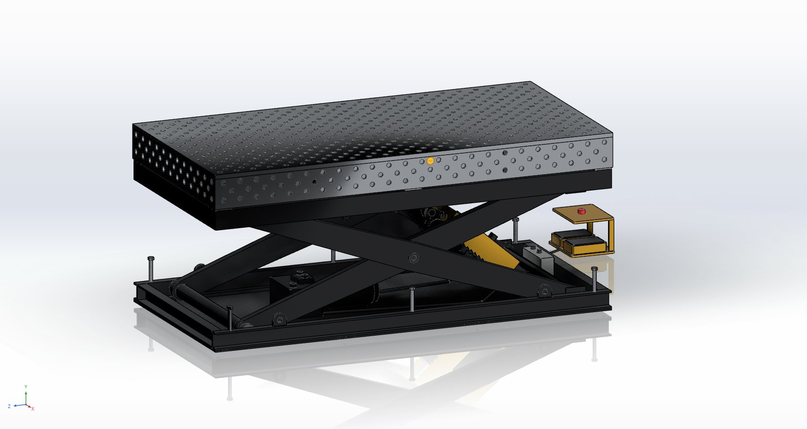<figcaption>Bovenkant lift 825 mm, werkhoogte 1025 mm. Gele kappen: de valbeveiliging van de cilinders.</figcaption></figure>
    <div>
      <div class="specs"><div class="spec"><span>Werkhoogte</span><b>570 – 1625</b><i>mm</i></div><div class="spec"><span>Last</span><b>4000</b><i>kg incl. blad</i></div><div class="spec"><span>Blad</span><b>2400 × 1200</b><i>mm, Ø28 DG</i></div><div class="spec"><span>Gaten</span><b>541 + 212</b><i>blad + wanden</i></div><div class="spec"><span>Hoogste druk</span><b>119</b><i>bar</i></div><div class="spec"><span>Aansluiting</span><b>230 V</b><i>2,2 kW, 16 A</i></div></div>
      <div class="notitie"><b>Anders dan DCT:</b> een eigen badge in plaats van hun logo, en de cilinders hangen 90 mm boven de schaararm. Zo blijft de druk in de laagste stand op 119 bar in plaats van meer dan 500 bar.</div>
      <div class="notitie" style="margin-top:10px"><b>Kopen of bouwen:</b> zelf bouwen ± € 11 100. Kant-en-klaar bij DCT: € 3 980 (heftafel) + € 4 340 (tafel).</div>
    </div>
  </div>
</section>

<section class="blok" id="fotos">
  <div class="blokkop"><h2>Foto's uit het model</h2><span class="ref">Phlippo CAD · 3 standen</span></div>
  <div class="fotos"><figure><figcaption>De lastafel op de heftafel, bovenkant lift 825 mm</figcaption></figure><figure>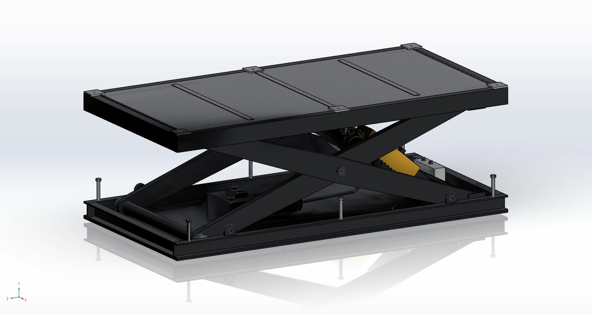<figcaption>De heftafel zonder tafel: schaar, opvanglade en 6 steunvlakken</figcaption></figure><figure>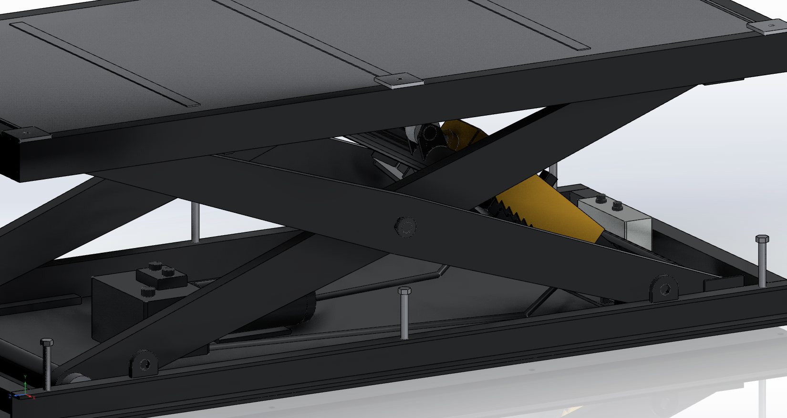<figcaption>Valbeveiliging: gele kap met zaagtand en de pal op de cilinder</figcaption></figure><figure>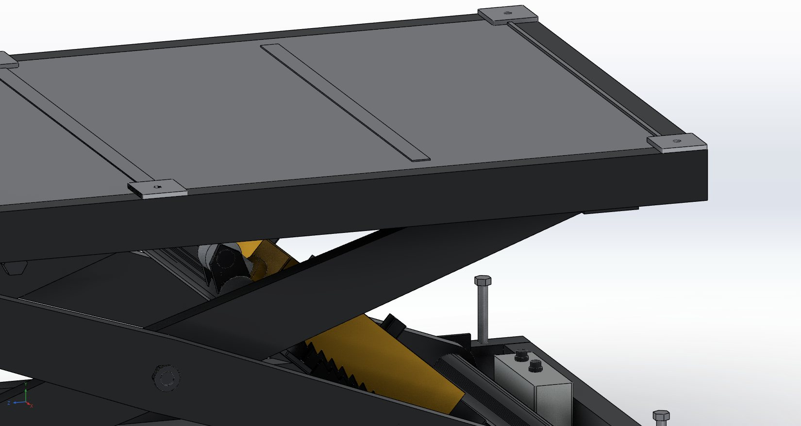<figcaption>Gefreesd steunvlak met boring M16</figcaption></figure><figure>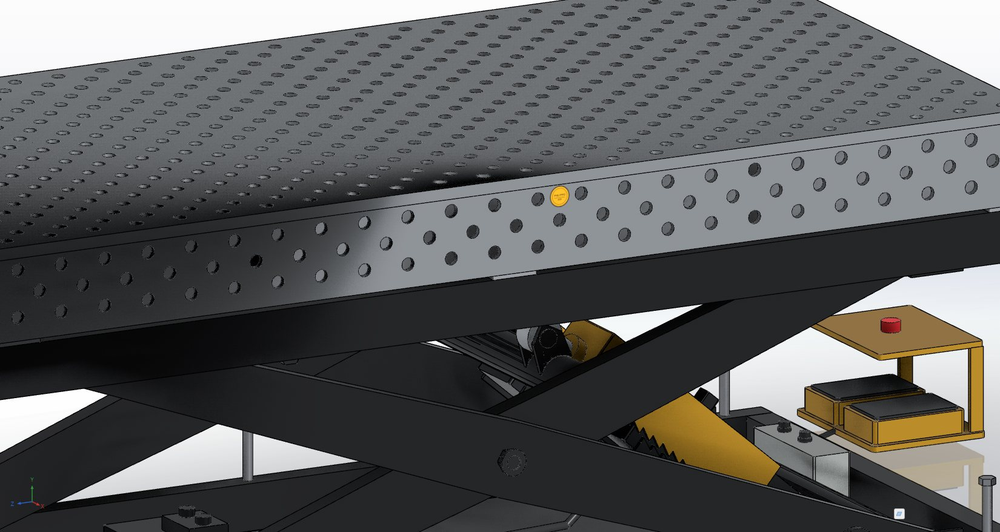<figcaption>Zijwand met drie rijen gaten Ø28 en de badge</figcaption></figure><figure>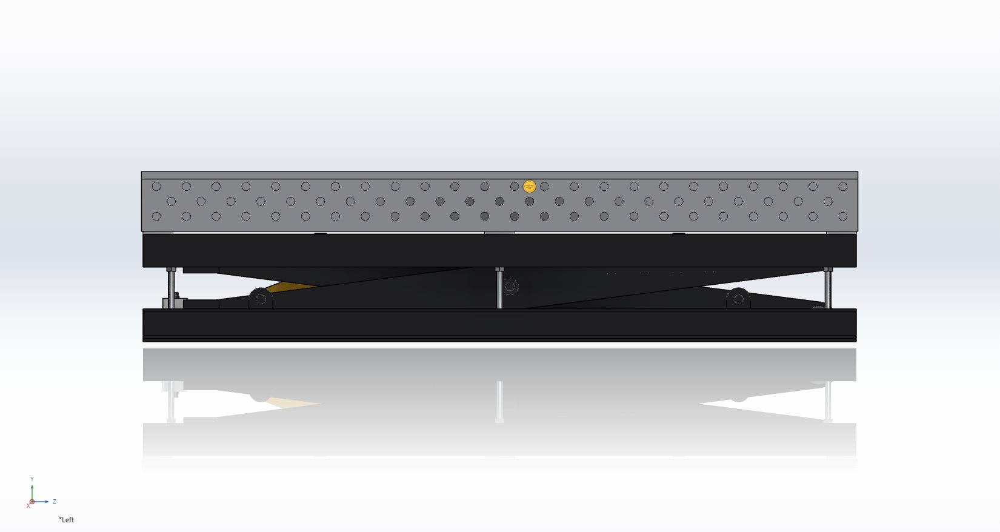<figcaption>Laagste stand: werkhoogte 570 mm</figcaption></figure><figure>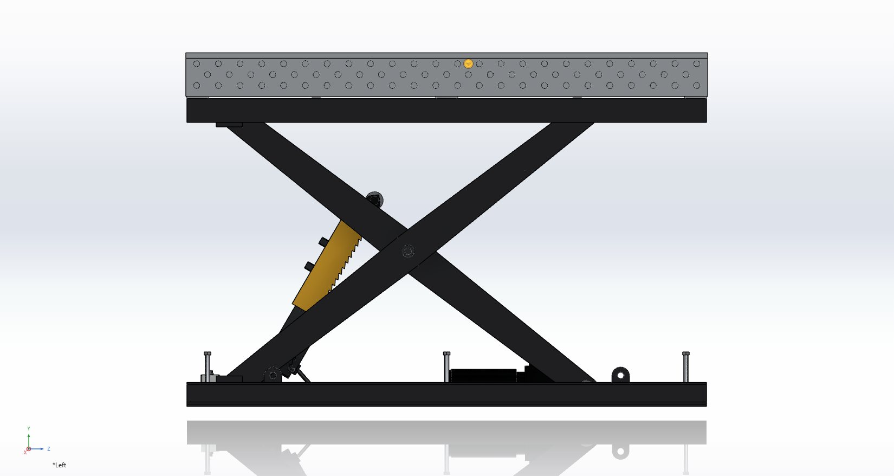<figcaption>Hoogste stand: werkhoogte 1625 mm</figcaption></figure><figure>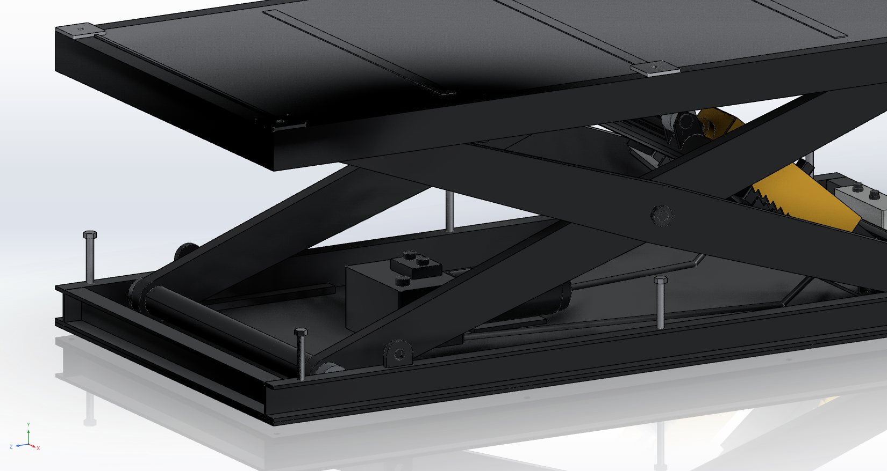<figcaption>Onderframe met aggregaat, rollen en aanslagpennen</figcaption></figure><figure>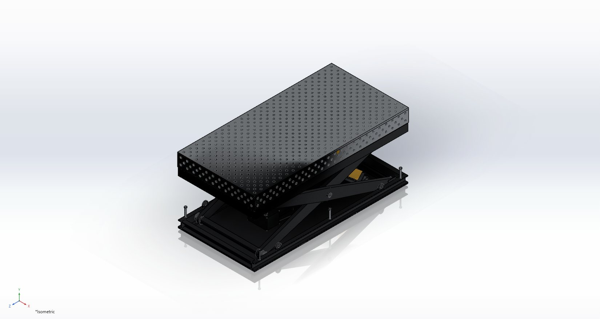<figcaption>Isometrie met het voetpedaal</figcaption></figure></div>
</section>

<section class="blok" id="bouwplan">
  <div class="blokkop"><h2>Bouwplan</h2><span class="ref">12 stappen · ± 9 werkdagen met 2 personen</span></div>
  <div class="lead"><p>De volgorde voor de bouw, van de bestelling tot de keuring. Posities en aantallen staan in Materiaallijst.md, de maten in de tekeningen LFT-00 tot LFT-08, de bedrading in de schemaset. Reken op ± 9 werkdagen voor twee personen, zonder de levertijd van het laserwerk, de cilinders en het nitreren. </p></div>
  <div class="voortgang"><span id="vinktelling">0 van 0 taken afgevinkt</span><div class="balk"><div id="vinkbalk"></div></div><button class="knop" type="button" id="wisvinken">Alles leegmaken</button></div>
  <section class="stap stap-vooraf" id="gereedschap"><div class="stapkop"><h3>Gereedschap en ruimte</h3></div><div class="stapinhoud"><p><b>Veiligheid tijdens het bouwen:</b> werk nooit onder een opgeheven schaar zonder dat de pallen ingevallen zijn of een steunbok onder het bovenframe staat.</p><ul class="taken"><li><label><input type="checkbox" id="gereedschap-0" data-vink><span>MAG-lasapparaat (≥ 250 A), haakse slijper, lintzaag of afkortzaag voor profielen.</span></label></li><li><label><input type="checkbox" id="gereedschap-1" data-vink><span>Kolomboor of magneetboor met ruimers Ø40 H8 en Ø31 H8. Voor de boringen van de armen en het vlakfrezen van de steunvlakken: een freesbank of een bewerkingsbedrijf.</span></label></li><li><label><input type="checkbox" id="gereedschap-2" data-vink><span>Een vlakke lastafel van minstens 2,5 x 1,3 m om op te lassen. De eerste tafel is dus best een gekochte of geleende.</span></label></li><li><label><input type="checkbox" id="gereedschap-3" data-vink><span>Een kraan of heftruck van minstens 1 t, 4 ringogen M20 (DIN 580) en hijsbanden.</span></label></li><li><label><input type="checkbox" id="gereedschap-4" data-vink><span>Een momentsleutel tot 300 Nm, een manometer 0-250 bar, een multimeter en een isolatiemeter (500 V).</span></label></li></ul></div></section>
<section class="stap" id="stap-1"><div class="stapkop"><span class="stapnr">1</span><h3>Bestellen en snijden</h3><span class="dag">dag 1, plus levertijd</span></div><div class="stapinhoud"><div><ol class="taken"><li><label><input type="checkbox" id="stap-1-0" data-vink><span>Vraag offertes op voor het laserwerk (plaatlijst §3), de 2 cilinders, het aggregaat en de tafel (of koop de tafel bij DCT). Geef de cilinderleverancier mee: enkelwerkend Ø100/56, slag 360, oog-oog 675, ogen Ø40, met leidingbreukventiel in het aansluitblok.</span></label></li><li><label><input type="checkbox" id="stap-1-1" data-vink><span>Bestel de staven (§1) en zaag ze volgens de zaaglijst (§2). Zet op elk stuk het positienummer met krijt of een stift.</span></label></li><li><label><input type="checkbox" id="stap-1-2" data-vink><span>Laat de plaatdelen lasersnijden. Gaten boven Ø20 snijdt de laser 1 mm kleiner, zodat je ze na het lassen op maat kan ruimen.</span></label></li><li><label><input type="checkbox" id="stap-1-3" data-vink><span>Of snij de niet-rechte delen zelf, met de mallen op ware grootte: <code>mallen/Mallen-lastafel-A3-1op1.pdf</code> (13 bladen A3, de armwang volledig) of <code>mallen/Mallen-lastafel-A4-1op1.pdf</code> (13 bladen A4).<ul><li>Druk af op 100 % (werkelijke grootte) en meet de controlemaat van 100 mm na.</li><li>Plak de mal met spuitlijm op de plaat, snij langs de dikke lijn (plasma, slijper of lintzaag) en kern het hart van elke boring door het kruisje.</li><li>Lange delen (kapzijde, palplaat) lopen over 2 of 3 bladen: leg de liniaal en de rode kruisjes op elkaar.</li></ul></span></label></li></ol></div></div></section>
<section class="stap" id="stap-2"><div class="stapkop"><span class="stapnr">2</span><h3>Onderframe</h3><span class="dag">dag 2</span></div><div class="stapinhoud met-beeld"><div><ol class="taken"><li><label><input type="checkbox" id="stap-2-0" data-vink><span>Leg de vloerplaat vlak op de lastafel. Zet de langsliggers en de koppliggers erop, met de U open naar buiten.</span></label></li><li><label><input type="checkbox" id="stap-2-1" data-vink><span>Meet de diagonalen. Ze mogen ten hoogste 2 mm verschillen. Hecht en las dan beurtelings links en rechts.</span></label></li><li><label><input type="checkbox" id="stap-2-2" data-vink><span>Las de scharnierbokken A (z = -1000) tegen het lijf van de langsliggers. Steek een as Ø40 door beide bokken voor je last, zodat de boringen in lijn blijven.</span></label></li><li><label><input type="checkbox" id="stap-2-3" data-vink><span>Las de rolbanen onder op 486 tot 526 van het hart, evenwijdig en waterpas (± 0,5 mm).</span></label></li><li><label><input type="checkbox" id="stap-2-4" data-vink><span>Las de cilinderbok (dwarsplaat en 4 lipplaten) met een as Ø40 door de lippen. Het hart van de pen ligt op 60 mm boven de vloer en 850 mm van het midden.</span></label></li><li><label><input type="checkbox" id="stap-2-5" data-vink><span>Las de 4 hijsogen op de bovenflens en draai de 6 aanslagpennen in.</span></label></li></ol></div><figure class="stapbeeld">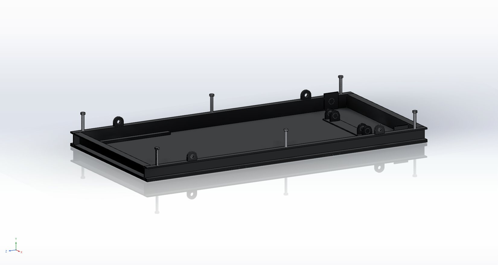<figcaption>Stap 1: onderframe</figcaption></figure></div></section>
<section class="stap" id="stap-3"><div class="stapkop"><span class="stapnr">3</span><h3>Armen</h3><span class="dag">dag 3 en 4</span></div><div class="stapinhoud"><div><ol class="taken"><li><label><input type="checkbox" id="stap-3-0" data-vink><span>Teken elke wang af. Met de A3-mallen plak je de 6 stroken van de volledige wang aan elkaar. Met A4: trek een hartlijn over de hele plaat en zet de boorpunten op 0, 1040 en 2080 met een meetlint. Leg de kopmal (ARM-KOP) op beide koppen en de middenmal (ARM-MID) op het midden, en trek de rechte randen met een lat: ±58 aan de koppen, ±80 in het midden.</span></label></li><li><label><input type="checkbox" id="stap-3-1" data-vink><span>Bouw per arm een koker van 2 wangen en de omtrekband van 45 x 5. Hecht ze in een mal, en las dan beurtelings boven en onder, zodat de arm recht blijft.</span></label></li><li><label><input type="checkbox" id="stap-3-2" data-vink><span>Las armpaar A: 2 armen met de buizen Ø80 aan beide uiteinden, in een mal. Ze staan haaks, met 980 mm tussen de wangen (± 0,5 mm).</span></label></li><li><label><input type="checkbox" id="stap-3-3" data-vink><span>Las armpaar B op dezelfde manier: 880 mm tussen de wangen, met de cilinderbuis Ø90 en de 4 ogen.</span></label></li><li><label><input type="checkbox" id="stap-3-4" data-vink><span>Boor en ruim de boringen na het lassen in één opspanning per paar. De scharnierafstand is 2080 ± 0,2 mm. De boring voor de middenpen (Ø31 H8) zit precies in het midden. Beide armen van een paar moeten gelijk zijn.</span></label></li></ol></div></div></section>
<section class="stap" id="stap-4"><div class="stapkop"><span class="stapnr">4</span><h3>Bovenframe</h3><span class="dag">dag 4</span></div><div class="stapinhoud"><div><ol class="taken"><li><label><input type="checkbox" id="stap-4-0" data-vink><span>Las de kokers tot een kader van 1190 x 2390. Ook hier mogen de diagonalen ten hoogste 2 mm verschillen.</span></label></li><li><label><input type="checkbox" id="stap-4-1" data-vink><span>Las de scharnierblokken B (z = -1000), de rolbanen boven en hun ophanging.</span></label></li><li><label><input type="checkbox" id="stap-4-2" data-vink><span>Las de 6 steunvlakken op. Frees ze daarna in één opspanning vlak (± 0,1 mm), met een boring M16 die past op de bevestigingsgaten van de tafel.</span></label></li></ol></div></div></section>
<section class="stap" id="stap-5"><div class="stapkop"><span class="stapnr">5</span><h3>Stralen en coaten</h3><span class="dag">levertijd 3 tot 5 dagen</span></div><div class="stapinhoud"><div><ol class="taken"><li><label><input type="checkbox" id="stap-5-0" data-vink><span>Plak de boringen, de steunvlakken en de rolbanen af.</span></label></li><li><label><input type="checkbox" id="stap-5-1" data-vink><span>Laat het onderframe, de armen en het bovenframe stralen (SA 2½) en poedercoaten in zwart RAL 9005 mat, en de 2 kappen van de valbeveiliging in geel RAL 1032. De opvanglade is sendzimir-verzinkt en wordt niet gecoat.</span></label></li></ol></div></div></section>
<section class="stap" id="stap-6"><div class="stapkop"><span class="stapnr">6</span><h3>Schaar monteren</h3><span class="dag">dag 5</span></div><div class="stapinhoud met-beeld"><div><ol class="taken"><li><label><input type="checkbox" id="stap-6-0" data-vink><span>Pers de glijlagers in alle boringen en zet de smeernippels erin.</span></label></li><li><label><input type="checkbox" id="stap-6-1" data-vink><span>Zet armpaar A met de pennen Ø40 in de scharnierbokken. Leg armpaar B ertussen.</span></label></li><li><label><input type="checkbox" id="stap-6-2" data-vink><span>Steek de middenpennen M30 door. Draai ze aan tot de armen zonder speling draaien, en borg ze met de contramoer en Loctite 243.</span></label></li><li><label><input type="checkbox" id="stap-6-3" data-vink><span>Monteer de 4 rollen: 2 op de buis boven van paar A, en 2 op de astappen onder van paar B. Borg de pennen met de borgplaatjes.</span></label></li></ol></div><figure class="stapbeeld">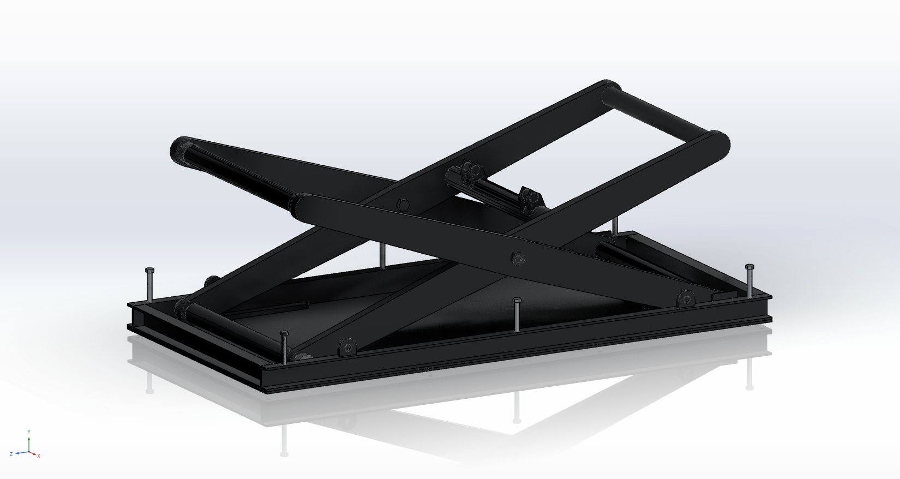<figcaption>Stap 2: schaar</figcaption></figure></div></section>
<section class="stap" id="stap-7"><div class="stapkop"><span class="stapnr">7</span><h3>Cilinders en valbeveiliging</h3><span class="dag">dag 5</span></div><div class="stapinhoud met-beeld"><div><ol class="taken"><li><label><input type="checkbox" id="stap-7-0" data-vink><span>Zet de cilinders met de pennen Ø40 in de cilinderbok. Monteer de stangogen op de ogen van paar B.</span></label></li><li><label><input type="checkbox" id="stap-7-1" data-vink><span>Monteer de palplaten met de scharnierbouten en de veren. Schuif de gele kap over de koker en klem hem met de klembus op de stang.</span></label></li><li><label><input type="checkbox" id="stap-7-2" data-vink><span>Monteer de ontgrendelmagneten. Een pal moet bij stroom 15 mm vrijkomen, en zonder stroom terugvallen in de tanden.</span></label></li></ol></div><figure class="stapbeeld">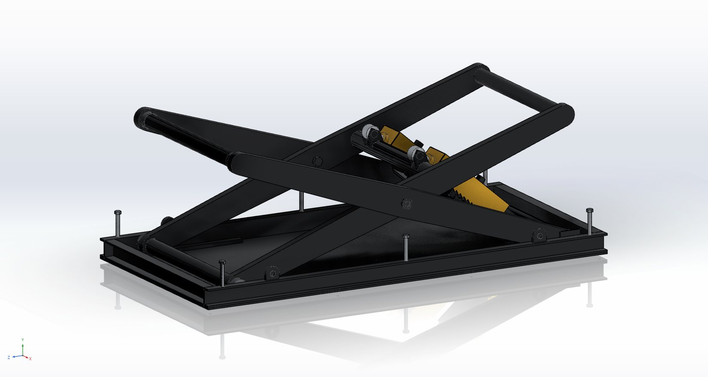<figcaption>Stap 3: cilinders met de valbeveiliging</figcaption></figure></div></section>
<section class="stap" id="stap-8"><div class="stapkop"><span class="stapnr">8</span><h3>Bovenframe plaatsen</h3><span class="dag">dag 6</span></div><div class="stapinhoud met-beeld"><div><ol class="taken"><li><label><input type="checkbox" id="stap-8-0" data-vink><span>Hijs het bovenframe (± 210 kg) boven de schaar. Steek de pennen Ø40 door de scharnierblokken B. Laat de rollen van paar A in de rolbanen zakken.</span></label></li><li><label><input type="checkbox" id="stap-8-1" data-vink><span>Zet een steunbok onder het bovenframe, zolang er geen olie in het systeem zit.</span></label></li><li><label><input type="checkbox" id="stap-8-2" data-vink><span>Leg de opvanglade in.</span></label></li></ol></div><figure class="stapbeeld">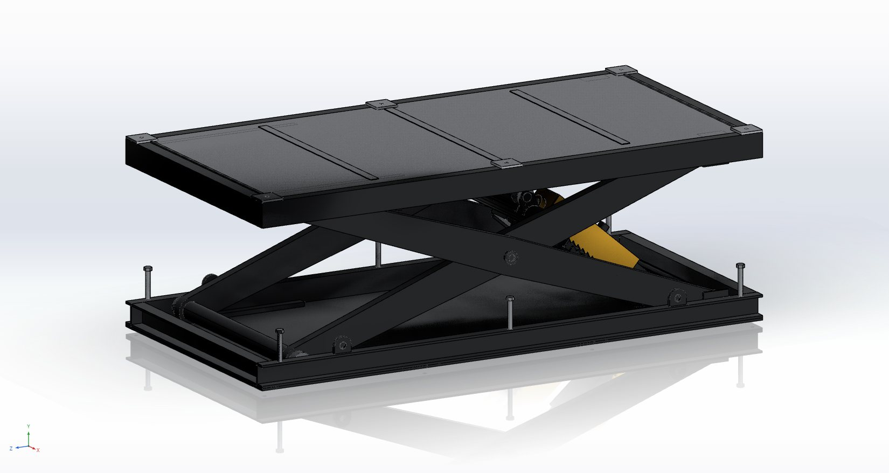<figcaption>Stap 4: bovenframe</figcaption></figure></div></section>
<section class="stap" id="stap-9"><div class="stapkop"><span class="stapnr">9</span><h3>Aggregaat, kast en bekabeling</h3><span class="dag">dag 6 en 7</span></div><div class="stapinhoud met-beeld"><div><ol class="taken"><li><label><input type="checkbox" id="stap-9-0" data-vink><span>Zet het aggregaat vast op de vloerplaat (trillingsdempers M8). Leg de slangen langs de vloer naar de cilinders.</span></label></li><li><label><input type="checkbox" id="stap-9-1" data-vink><span>Vul 15 l HLP 32.</span></label></li><li><label><input type="checkbox" id="stap-9-2" data-vink><span>Bouw de bedienkast volgens de schemaset: blad 3 voor de voeding 230 V, blad 4 voor de besturing 24 V en blad 6 voor het klemmenplan. Sluit het voetpedaal, de eindschakelaar boven, het zakventiel en de 2 ontgrendelmagneten aan.</span></label></li><li><label><input type="checkbox" id="stap-9-3" data-vink><span>Meet volgens EN 60204-1 (18.2 en 18.3): de doorgaande aarding (&lt; 0,1 Ω tot elk metalen deel) en de isolatieweerstand (&gt; 1 MΩ bij 500 V).</span></label></li></ol></div><figure class="stapbeeld">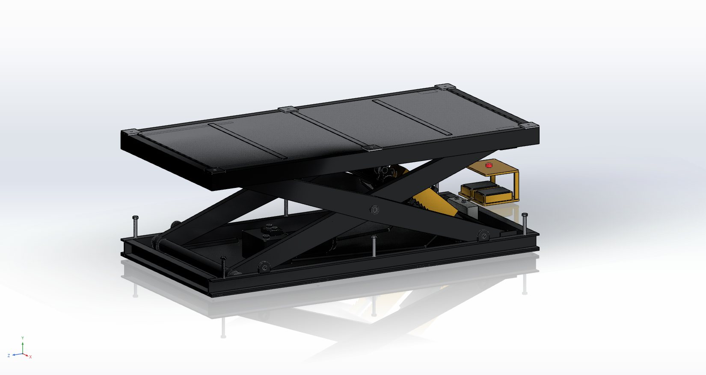<figcaption>Stap 5: aggregaat, bedienkast en voetpedaal</figcaption></figure></div></section>
<section class="stap" id="stap-10"><div class="stapkop"><span class="stapnr">10</span><h3>In bedrijf stellen</h3><span class="dag">dag 8</span></div><div class="stapinhoud"><div><ol class="taken"><li><label><input type="checkbox" id="stap-10-0" data-vink><span>Laat de lift onbelast een paar keer op en neer gaan, telkens over de hele slag, tot de cilinders ontlucht zijn.</span></label></li><li><label><input type="checkbox" id="stap-10-1" data-vink><span>Zet het overdrukventiel met de manometer op 140 bar.</span></label></li><li><label><input type="checkbox" id="stap-10-2" data-vink><span>Stel de smoorklep zo in dat de tafel met last met ± 30 mm/s zakt. EN 1570-1 laat hooguit 150 mm/s toe.</span></label></li><li><label><input type="checkbox" id="stap-10-3" data-vink><span>Stel de eindschakelaar boven af op 1425 mm, en de aanslagpennen op de laagste stand (370 mm).</span></label></li><li><label><input type="checkbox" id="stap-10-4" data-vink><span>Test de valbeveiliging. Laat bij stilstand het pedaal los: de pallen vallen in. Bij &quot;neer&quot; komen ze eerst vrij, en pas daarna opent het ventiel.</span></label></li><li><label><input type="checkbox" id="stap-10-5" data-vink><span>Test de noodstop in beide richtingen: de motor en het zakventiel moeten meteen stoppen.</span></label></li></ol></div></div></section>
<section class="stap" id="stap-11"><div class="stapkop"><span class="stapnr">11</span><h3>De tafel plaatsen</h3><span class="dag">dag 8</span></div><div class="stapinhoud met-beeld"><div><ol class="taken"><li><label><input type="checkbox" id="stap-11-0" data-vink><span>Hijs de tafel (± 723 kg) met 4 ringogen M20 in de hoekgaten. Gebruik een kraan van minstens 1 t.</span></label></li><li><label><input type="checkbox" id="stap-11-1" data-vink><span>Zet de tafel op de 6 steunvlakken en bout hem vast met 6 bouten M16 (8.8, 210 Nm).</span></label></li></ol></div><figure class="stapbeeld">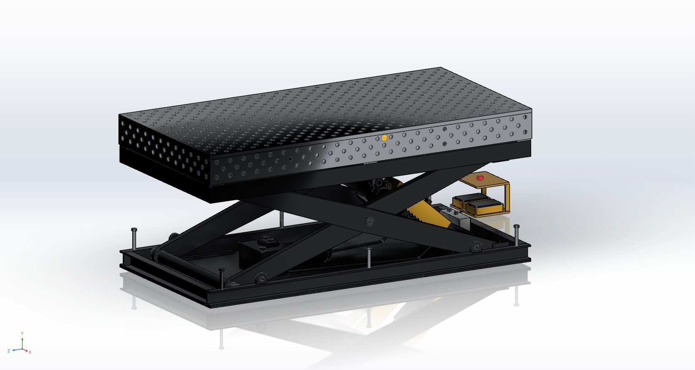<figcaption>Stap 6: lastafel op de heftafel</figcaption></figure></div></section>
<section class="stap" id="stap-12"><div class="stapkop"><span class="stapnr">12</span><h3>Keuren en documenteren</h3><span class="dag">dag 9</span></div><div class="stapinhoud"><div><ol class="taken"><li><label><input type="checkbox" id="stap-12-0" data-vink><span><b>Statische proef:</b> 1,25 x de nominale last, dus 5000 kg met het blad: 723 kg blad + 4277 kg proeflast. Laat die 15 minuten in de hoogste stand staan. De tafel mag niet merkbaar zakken.</span></label></li><li><label><input type="checkbox" id="stap-12-1" data-vink><span><b>Dynamische proef:</b> 1,1 x de nominale last (4400 kg met het blad), 3 keer de volle slag op en neer. Alle functies moeten werken.</span></label></li><li><label><input type="checkbox" id="stap-12-2" data-vink><span>Controleer het leidingbreukventiel volgens de opgave van de cilinderleverancier.</span></label></li><li><label><input type="checkbox" id="stap-12-3" data-vink><span>Maak het technisch dossier volgens de Machineverordening (EU) 2023/1230 en EN 1570-1:<ul><li>risicobeoordeling;</li><li>berekeningen;</li><li>tekeningen;</li><li>schema's;</li><li>proefverslagen;</li><li>EU-conformiteitsverklaring;</li><li>CE-plaat met de nominale last;</li><li>handleiding.</li></ul></span></label></li><li><label><input type="checkbox" id="stap-12-4" data-vink><span>Plan elk jaar een keuring: pennen, lagers, slangen, de valbeveiliging en een proef met de nominale last.</span></label></li></ol></div></div></section>
</section>

<section class="blok" id="materiaal">
  <div class="blokkop"><h2>Materiaallijsten</h2><span class="ref">uit de maten van het model</span></div>
  <div class="gewicht"><div><span>Staal lift</span><b>725,9 kg</b></div><div><span>Staal tafel</span><b>734,1 kg</b></div><div><span>Samen</span><b>1460 kg</b></div><div><span>Aggregaat en cilinders</span><b>± 120 kg</b></div></div>
  <div class="tabs" role="tablist"><button type="button" role="tab" id="tab-bestellen" aria-controls="lijst-bestellen" aria-selected="true">Bestellen</button><button type="button" role="tab" id="tab-zaaglijst" aria-controls="lijst-zaaglijst" aria-selected="false">Zaaglijst</button><button type="button" role="tab" id="tab-plaatlijst" aria-controls="lijst-plaatlijst" aria-selected="false">Plaatlijst</button><button type="button" role="tab" id="tab-normdelen" aria-controls="lijst-normdelen" aria-selected="false">Normdelen</button><button type="button" role="tab" id="tab-kooponderdelen" aria-controls="lijst-kooponderdelen" aria-selected="false">Kooponderdelen</button><button type="button" role="tab" id="tab-verbruik" aria-controls="lijst-verbruik" aria-selected="false">Verbruik</button></div>
  <div class="lijst" role="tabpanel" id="lijst-bestellen" aria-labelledby="tab-bestellen"><div class="lijstkop"><p>Staven van 6 m, zo verdeeld dat er zo weinig mogelijk overblijft (zaagsnede 3 mm). Plaat netto, bestel ± 15 % extra voor het nesten.</p><button class="knop" type="button" data-csv="bestellen">Download als CSV</button></div><div class="tabelvak"><table id="t-staven"><thead><tr><th>Profiel</th><th class="n">Stuks</th><th class="n">Totaal mm</th><th class="n">Staven 6 m</th><th class="n">kg/m</th><th class="n">kg</th></tr></thead><tbody><tr><td>UNP 100</td><td class="n">4</td><td class="n">6980</td><td class="n">2</td><td class="n">10,6</td><td class="n">127,2</td></tr><tr><td>Koker 110 x 50 x 5</td><td class="n">2</td><td class="n">4780</td><td class="n">1</td><td class="n">11,8</td><td class="n">70,6</td></tr><tr><td>Koker 110 x 60 x 5</td><td class="n">2</td><td class="n">2184</td><td class="n">1</td><td class="n">12,6</td><td class="n">75,4</td></tr><tr><td>Buis Ø80 x 5</td><td class="n">4</td><td class="n">3736</td><td class="n">1</td><td class="n">9,2</td><td class="n">55,5</td></tr><tr><td>Buis Ø90 x 6</td><td class="n">1</td><td class="n">884</td><td class="n">1</td><td class="n">12,4</td><td class="n">74,6</td></tr><tr><td>Platstaal 40 x 20</td><td class="n">2</td><td class="n">1474</td><td class="n">1</td><td class="n">6,3</td><td class="n">37,7</td></tr><tr><td>Platstaal 40 x 10</td><td class="n">2</td><td class="n">1372</td><td class="n">1</td><td class="n">3,1</td><td class="n">18,8</td></tr><tr><td>Platstaal 30 x 8</td><td class="n">2</td><td class="n">1372</td><td class="n">1</td><td class="n">1,9</td><td class="n">11,3</td></tr><tr><td>Platstaal 45 x 5</td><td class="n">4</td><td class="n">18240</td><td class="n">4</td><td class="n">1,8</td><td class="n">42,4</td></tr><tr><td>Rond Ø40 (42CrMo4)</td><td class="n">10</td><td class="n">1050</td><td class="n">1</td><td class="n">9,9</td><td class="n">59,2</td></tr><tr><td>Draadeind M20 (8.8, verzinkt)</td><td class="n">6</td><td class="n">840</td><td class="n">1</td><td class="n">2</td><td class="n">12</td></tr></tbody></table></div><div class="tabelvak"><table id="t-platen"><thead><tr><th>Materiaal</th><th class="n">Dikte mm</th><th class="n">m²</th><th class="n">kg</th><th>Posities</th></tr></thead><tbody><tr><td>DX51D+Z275 (sendzimir)</td><td class="n">3</td><td class="n">2,59</td><td class="n">61,1</td><td>Bodem, Tussenstrip</td></tr><tr><td>S355</td><td class="n">5</td><td class="n">2,81</td><td class="n">110,3</td><td>Armwang (taps 116 tot 160)</td></tr><tr><td>S355</td><td class="n">6</td><td class="n">0,2</td><td class="n">9,4</td><td>Kapdak, Kopplaat</td></tr><tr><td>S355</td><td class="n">8</td><td class="n">0,32</td><td class="n">20</td><td>Dwarsplaat, Kapzijde met zaagtand</td></tr><tr><td>S355</td><td class="n">10</td><td class="n">2,88</td><td class="n">225,7</td><td>Vloerplaat, Scharnierbok A</td></tr><tr><td>S355</td><td class="n">12</td><td class="n">1,32</td><td class="n">124,3</td><td>Lipplaat, Oog cilinder, Langsrib, Dwarsrib midden, Dwarsrib buiten</td></tr><tr><td>S355</td><td class="n">15</td><td class="n">0,06</td><td class="n">7,1</td><td>Steunvlak (na lassen vlakfrezen)</td></tr><tr><td>S355</td><td class="n">16</td><td class="n">0,02</td><td class="n">2,8</td><td>Hijsoog</td></tr><tr><td>S355</td><td class="n">20</td><td class="n">0,09</td><td class="n">14,4</td><td>Scharnierblok B</td></tr><tr><td>S355 (C45 gehard voor de tanden)</td><td class="n">8</td><td class="n">0,05</td><td class="n">3,4</td><td>Palplaat</td></tr><tr><td>S690QL</td><td class="n">12</td><td class="n">1,25</td><td class="n">117,9</td><td>Langswand, Kopwand</td></tr><tr><td>S690QL</td><td class="n">25</td><td class="n">2,88</td><td class="n">499,8</td><td>Blad 2400 x 1200</td></tr></tbody></table></div></div>
<div class="lijst" role="tabpanel" id="lijst-zaaglijst" aria-labelledby="tab-zaaglijst" hidden><div class="lijstkop"><p>Profielen, op lengte gezaagd. Zet op elk stuk het positienummer.</p><button class="knop" type="button" data-csv="zaaglijst">Download als CSV</button></div><div class="tabelvak"><table id="t-zaaglijst"><thead><tr><th>Groep</th><th>Positie</th><th>Profiel</th><th class="n">Lengte mm</th><th class="n">Aantal</th><th class="n">kg</th><th>Bewerking</th></tr></thead><tbody><tr><td>Onderframe</td><td>Langsligger</td><td>UNP 100</td><td class="n">2390</td><td class="n">2</td><td class="n">50,7</td><td>recht, open naar buiten</td></tr><tr><td>Onderframe</td><td>Kopligger</td><td>UNP 100</td><td class="n">1100</td><td class="n">2</td><td class="n">23,3</td><td>recht, tussen de langsliggers (in het lijf)</td></tr><tr><td>Onderframe</td><td>Rolbaan onder (paar B)</td><td>Platstaal 40 x 20</td><td class="n">737</td><td class="n">2</td><td class="n">9,3</td><td>bovenkant vlak, ontbramen</td></tr><tr><td>Bovenframe</td><td>Langsligger boven</td><td>Koker 110 x 50 x 5</td><td class="n">2390</td><td class="n">2</td><td class="n">56,3</td><td>recht</td></tr><tr><td>Bovenframe</td><td>Kopligger boven</td><td>Koker 110 x 60 x 5</td><td class="n">1092</td><td class="n">2</td><td class="n">27,4</td><td>recht, tussen de langsliggers</td></tr><tr><td>Bovenframe</td><td>Rolbaan boven (paar A)</td><td>Platstaal 40 x 10</td><td class="n">686</td><td class="n">2</td><td class="n">4,3</td><td>onderkant vlak</td></tr><tr><td>Bovenframe</td><td>Ophanging rolbaan</td><td>Platstaal 30 x 8</td><td class="n">686</td><td class="n">2</td><td class="n">2,6</td><td></td></tr><tr><td>Schaar A</td><td>Buis onder en boven</td><td>Buis Ø80 x 5</td><td class="n">984</td><td class="n">2</td><td class="n">18,2</td><td>tussen de armen, 2 mm in de wang</td></tr><tr><td>Schaar B</td><td>Buis boven en onder</td><td>Buis Ø80 x 5</td><td class="n">884</td><td class="n">2</td><td class="n">16,4</td><td></td></tr><tr><td>Schaar B</td><td>Cilinderbuis</td><td>Buis Ø90 x 6</td><td class="n">884</td><td class="n">1</td><td class="n">11</td><td>op 775 van het vaste scharnier</td></tr><tr><td>Schaar</td><td>Omtrekband arm</td><td>Platstaal 45 x 5</td><td class="n">4560</td><td class="n">4</td><td class="n">32,2</td><td>rond zetten op de wangen (R58 aan de kop)</td></tr><tr><td>Scharnieren</td><td>Pennen Ø40 (scharnier A, B, cilinders, stangogen)</td><td>Rond Ø40 (42CrMo4)</td><td class="n">120</td><td class="n">8</td><td class="n">9,5</td><td>draaien, inductiegehard, borggroef</td></tr><tr><td>Scharnieren</td><td>Astappen rollen B</td><td>Rond Ø40 (42CrMo4)</td><td class="n">45</td><td class="n">2</td><td class="n">0,9</td><td>draaien, slijpen h6</td></tr><tr><td>Onderframe</td><td>Aanslagpennen</td><td>Draadeind M20 (8.8, verzinkt)</td><td class="n">140</td><td class="n">6</td><td class="n">1,7</td><td>met dopmoer en contramoer</td></tr></tbody></table></div></div>
<div class="lijst" role="tabpanel" id="lijst-plaatlijst" aria-labelledby="tab-plaatlijst" hidden><div class="lijstkop"><p>Lasersnijden. Gaten boven Ø20 1 mm kleiner snijden en na het lassen ruimen.</p><button class="knop" type="button" data-csv="plaatlijst">Download als CSV</button></div><div class="tabelvak"><table id="t-plaatlijst"><thead><tr><th>Groep</th><th>Positie</th><th>Materiaal</th><th class="n">Dikte</th><th class="n">Breed</th><th class="n">Lang</th><th class="n">Aantal</th><th class="n">kg</th><th>Opmerking</th></tr></thead><tbody><tr><td>Onderframe</td><td>Vloerplaat</td><td>S355</td><td class="n">10</td><td class="n">1190</td><td class="n">2390</td><td class="n">1</td><td class="n">223,3</td><td>8 ankergaten Ø18</td></tr><tr><td>Onderframe</td><td>Scharnierbok A</td><td>S355</td><td class="n">10</td><td class="n">120</td><td class="n">130</td><td class="n">2</td><td class="n">2,4</td><td>boring Ø40 H8</td></tr><tr><td>Onderframe</td><td>Hijsoog</td><td>S355</td><td class="n">16</td><td class="n">80</td><td class="n">70</td><td class="n">4</td><td class="n">2,8</td><td>R40, gat Ø30</td></tr><tr><td>Cilinderbok</td><td>Dwarsplaat</td><td>S355</td><td class="n">8</td><td class="n">100</td><td class="n">620</td><td class="n">1</td><td class="n">3,9</td><td></td></tr><tr><td>Cilinderbok</td><td>Lipplaat</td><td>S355</td><td class="n">12</td><td class="n">80</td><td class="n">108</td><td class="n">4</td><td class="n">3,3</td><td>boring Ø40 H8 op 60 hoogte</td></tr><tr><td>Bovenframe</td><td>Scharnierblok B</td><td>S355</td><td class="n">20</td><td class="n">120</td><td class="n">127</td><td class="n">6</td><td class="n">14,4</td><td>3 platen per blok, gelast, boring Ø40 H8</td></tr><tr><td>Bovenframe</td><td>Steunvlak (na lassen vlakfrezen)</td><td>S355</td><td class="n">15</td><td class="n">100</td><td class="n">100</td><td class="n">6</td><td class="n">7,1</td><td>boring M16, frezen tot 10</td></tr><tr><td>Opvanglade</td><td>Bodem</td><td>DX51D+Z275 (sendzimir)</td><td class="n">3</td><td class="n">1090</td><td class="n">2270</td><td class="n">1</td><td class="n">58,3</td><td>randen 6 omzetten</td></tr><tr><td>Opvanglade</td><td>Tussenstrip</td><td>DX51D+Z275 (sendzimir)</td><td class="n">3</td><td class="n">40</td><td class="n">980</td><td class="n">3</td><td class="n">2,8</td><td></td></tr><tr><td>Schaar</td><td>Armwang (taps 116 tot 160)</td><td>S355</td><td class="n">5</td><td class="n">160</td><td class="n">2196</td><td class="n">8</td><td class="n">110,3</td><td>2 per arm; boring middenpen Ø31 H8 na lassen</td></tr><tr><td>Schaar B</td><td>Oog cilinder</td><td>S355</td><td class="n">12</td><td class="n">80</td><td class="n">154</td><td class="n">4</td><td class="n">4,6</td><td>boring Ø40 H8</td></tr><tr><td>Valbeveiliging</td><td>Kapzijde met zaagtand</td><td>S355</td><td class="n">8</td><td class="n">128</td><td class="n">500</td><td class="n">4</td><td class="n">16,1</td><td>zaagtand steek 30, diepte 14</td></tr><tr><td>Valbeveiliging</td><td>Kapdak</td><td>S355</td><td class="n">6</td><td class="n">162</td><td class="n">503</td><td class="n">2</td><td class="n">7,7</td><td></td></tr><tr><td>Valbeveiliging</td><td>Kopplaat</td><td>S355</td><td class="n">6</td><td class="n">162</td><td class="n">111</td><td class="n">2</td><td class="n">1,7</td><td>doorvoer Ø57</td></tr><tr><td>Valbeveiliging</td><td>Palplaat</td><td>S355 (C45 gehard voor de tanden)</td><td class="n">8</td><td class="n">38</td><td class="n">360</td><td class="n">4</td><td class="n">3,4</td><td>zaagtand, scharniergat Ø16</td></tr><tr><td>Lastafel</td><td>Blad 2400 x 1200</td><td>S690QL</td><td class="n">25</td><td class="n">1200</td><td class="n">2400</td><td class="n">1</td><td class="n">499,8</td><td>541 gaten Ø28 na lassen boren</td></tr><tr><td>Lastafel</td><td>Langswand</td><td>S690QL</td><td class="n">12</td><td class="n">175</td><td class="n">2400</td><td class="n">2</td><td class="n">79,1</td><td>71 gaten Ø28</td></tr><tr><td>Lastafel</td><td>Kopwand</td><td>S690QL</td><td class="n">12</td><td class="n">175</td><td class="n">1176</td><td class="n">2</td><td class="n">38,8</td><td>35 gaten Ø28</td></tr><tr><td>Lastafel</td><td>Langsrib</td><td>S355</td><td class="n">12</td><td class="n">175</td><td class="n">2376</td><td class="n">2</td><td class="n">78,3</td><td></td></tr><tr><td>Lastafel</td><td>Dwarsrib midden</td><td>S355</td><td class="n">12</td><td class="n">175</td><td class="n">1039</td><td class="n">2</td><td class="n">34,3</td><td></td></tr><tr><td>Lastafel</td><td>Dwarsrib buiten</td><td>S355</td><td class="n">12</td><td class="n">175</td><td class="n">58</td><td class="n">4</td><td class="n">3,8</td><td></td></tr></tbody></table></div></div>
<div class="lijst" role="tabpanel" id="lijst-normdelen" aria-labelledby="tab-normdelen" hidden><div class="lijstkop"><p>Pennen, lagers, rollen, bouten en smeernippels.</p><button class="knop" type="button" data-csv="normdelen">Download als CSV</button></div><div class="tabelvak"><table id="t-normdelen"><thead><tr><th>Groep</th><th>Omschrijving</th><th>Norm / type</th><th class="n">Aantal</th></tr></thead><tbody><tr><td>Schaar</td><td>Middenpen M30 x 140 met kop, moer en sluitring</td><td>ISO 4014 8.8 + ISO 4032 + ISO 7089, verzinkt</td><td class="n">2</td></tr><tr><td>Schaar</td><td>Glijlager Ø40/44 x 30 (in elke scharnierboring)</td><td>iglidur G of brons CuSn8 met smeergroef</td><td class="n">12</td></tr><tr><td>Schaar</td><td>Glijlager Ø30/34 x 20 (middenpen, per arm)</td><td>iglidur G of CuSn8</td><td class="n">4</td></tr><tr><td>Schaar</td><td>Rol Ø90 x 38 met naaldlager</td><td>INA NUTR 40 (steunrol met as) of gelijkwaardig</td><td class="n">4</td></tr><tr><td>Scharnieren</td><td>Borgplaat met bout M8 per pen</td><td>S235 6 mm + ISO 4017 M8 x 16</td><td class="n">10</td></tr><tr><td>Scharnieren</td><td>Smeernippel M8 x 1</td><td>DIN 71412 A</td><td class="n">12</td></tr><tr><td>Valbeveiliging</td><td>Scharnierbout pal M16 x 30 + veer</td><td>ISO 7379 Ø16 + drukveer 1,6 x 12 x 30</td><td class="n">4</td></tr><tr><td>Bovenframe</td><td>Bout M16 x 45 (tafel op steunvlakken)</td><td>ISO 4017 8.8 + sluitring</td><td class="n">6</td></tr><tr><td>Montage</td><td>Ankerbout M16 (vloer, optioneel)</td><td>Fischer FAZ II 16/25</td><td class="n">8</td></tr><tr><td>Montage</td><td>Ringogen M20 (heffen)</td><td>DIN 580</td><td class="n">4</td></tr></tbody></table></div></div>
<div class="lijst" role="tabpanel" id="lijst-kooponderdelen" aria-labelledby="tab-kooponderdelen" hidden><div class="lijstkop"><p>Hydrauliek en elektro. De aanduidingen (-Q1, -K1 …) verwijzen naar de schemaset.</p><button class="knop" type="button" data-csv="kooponderdelen">Download als CSV</button></div><div class="tabelvak"><table id="t-kooponderdelen"><thead><tr><th>Groep</th><th>Omschrijving</th><th>Type</th><th class="n">Aantal</th></tr></thead><tbody><tr><td>Hydrauliek</td><td>Hydraulisch aggregaat 230 V 2,2 kW, enkelwerkend, 210 bar, tank 8-12 l, met zak- en overdrukventiel</td><td>Hansa-Flex HKK 230V 2.2 of gelijkwaardig</td><td class="n">1</td></tr><tr><td>Hydrauliek</td><td>Cilinder enkelwerkend Ø100/56 slag 360, oog-oog 675, met leidingbreukventiel</td><td>op maat (offerte)</td><td class="n">2</td></tr><tr><td>Hydrauliek</td><td>Slang 2SN DN10 met DKOL-koppelingen, ± 1,4 m</td><td>EN 853 2SN</td><td class="n">4</td></tr><tr><td>Hydrauliek</td><td>Olie HLP 32</td><td>DIN 51524-2</td><td class="n">15 l</td></tr><tr><td>Elektro</td><td>CEE-stekker 230 V 16 A 3-polig met 5 m kabel H07RN-F 3G2,5 (-X0)</td><td>Mennekes 13001</td><td class="n">1</td></tr><tr><td>Elektro</td><td>Hoofdschakelaar 2-polig 25 A, rood/geel, afsluitbaar (-Q1)</td><td>Siemens 3LD2003-0TK53</td><td class="n">1</td></tr><tr><td>Elektro</td><td>Motorbeveiligingsschakelaar 13-20 A (-F1)</td><td>Siemens 3RV2021-4BA10</td><td class="n">1</td></tr><tr><td>Elektro</td><td>Installatieautomaat 2-polig C2 (-F2)</td><td>Siemens 5SY6202-7</td><td class="n">1</td></tr><tr><td>Elektro</td><td>Magneetschakelaar 7,5 kW, spoel 24 V DC (-Q2)</td><td>Siemens 3RT2025-1BB40</td><td class="n">1</td></tr><tr><td>Elektro</td><td>Voeding 24 V DC 2,5 A DIN-rail (-T1)</td><td>Mean Well HDR-60-24</td><td class="n">1</td></tr><tr><td>Elektro</td><td>Noodstoprelais 24 V DC, 3 NO (-K1)</td><td>Pilz PNOZ s3 750103</td><td class="n">1</td></tr><tr><td>Elektro</td><td>Signaallamp wit 230 V (-P1)</td><td>Siemens 3SU1156-6AA60-1AA0</td><td class="n">1</td></tr><tr><td>Elektro</td><td>Drukknop blauw (reset) (-S4)</td><td>Siemens 3SU1150-0AB50-1BA0</td><td class="n">1</td></tr><tr><td>Elektro</td><td>Dubbele voetschakelaar met beschermkap en noodstop, kabel 5 m (-S1/-S2/-S3)</td><td>Herga 6226 / Steute GFSI 2 VD (gelijkwaardig)</td><td class="n">1</td></tr><tr><td>Elektro</td><td>Eindschakelaar boven, rolhefboom, 1 NO + 1 NC (-B1)</td><td>Schmersal PS116-T11-RMS</td><td class="n">1</td></tr><tr><td>Elektro</td><td>Trekmagneet 24 V DC 50 N (ontgrendeling pal) (-Q12, -Q13)</td><td>Kuhnke H 3.2 of gelijkwaardig</td><td class="n">2</td></tr><tr><td>Elektro</td><td>Kabels: 3G2,5 motor, 7G0,75 pedaal, 3G1 ventielen (H07RN-F / ÖLFLEX) (-W1..-W6)</td><td>Lapp</td><td class="n">1</td></tr><tr><td>Elektro</td><td>Doorgangsklemmen 2,5 mm² + PE-klemmen (-X1)</td><td>Phoenix Contact UT 2,5 / UT 2,5-PE</td><td class="n">24</td></tr><tr><td>Elektro</td><td>Bedienkast staalplaat 265 x 135 x 85 RAL 7035, IP55, 2 x wartel M20 (+KAST)</td><td>Rittal KX 1528.000 of gelijkwaardig</td><td class="n">1</td></tr></tbody></table></div></div>
<div class="lijst" role="tabpanel" id="lijst-verbruik" aria-labelledby="tab-verbruik" hidden><div class="lijstkop"><p>Wat er tijdens de bouw opgaat.</p><button class="knop" type="button" data-csv="verbruik">Download als CSV</button></div><div class="tabelvak"><table id="t-verbruik"><thead><tr><th>Wat</th><th>Hoeveel</th></tr></thead><tbody><tr><td>Lasdraad G3Si1 Ø1,0 (MAG)</td><td>± 8 kg</td></tr><tr><td>Menggas Ar/CO₂ 82/18</td><td>1 fles 20 l</td></tr><tr><td>Stralen SA 2½ + poedercoat RAL 9005 mat (frames, armen)</td><td>± 22 m²</td></tr><tr><td>Poedercoat RAL 1032 (kappen valbeveiliging)</td><td>± 0,6 m²</td></tr><tr><td>Vet lithium EP2 (scharnieren, rollen)</td><td>1 patroon 400 g</td></tr><tr><td>Schroefdraadborging Loctite 243</td><td>1 flesje</td></tr></tbody></table></div></div>
  <p class="status" id="csvstatus" aria-live="polite"></p>
</section>

<section class="blok" id="kosten">
  <div class="blokkop"><h2>Bestellijst en kosten</h2><span class="ref">indicatief, excl. btw</span></div>
  <p class="lead">"Schatting" betekent dat ik geen prijs vond; vraag daarvoor een offerte. De tafel kopen is waarschijnlijk goedkoper dan hem zelf laten maken: nitreren en 750 gaten in S690QL is specialistenwerk.</p>
  <div class="tabelvak"><table><thead><tr><th>Groep</th><th>Wat</th><th class="n">Prijs excl. btw</th><th>Bron</th></tr></thead><tbody><tr><td>Tafel</td><td>blad 2400 x 1200 x 25 S690QL + wanden en ribben, gelast, CNC-gefreesd, 750 gaten Ø28, gasgenitreerd</td><td class="n">€ 4 500 (schatting)</td><td>offerte, of kant-en-klaar bij <a href="https://dctbv.nl/nl/producten/lastafel-2400x1200" target="_blank" rel="noopener">DCT € 4 340</a></td></tr><tr><td>Lift staal</td><td>onderframe, schaar, bovenframe, opvanglade: ± 650 kg S355, laseren, zetten, lassen, nafrezen steunvlakken, poedercoat zwart en geel</td><td class="n">€ 3 200 (schatting)</td><td>offerte staalbouwer</td></tr><tr><td>Hydrauliek</td><td>aggregaat 230 V 2,2 kW, enkelwerkend, met zak- en overdrukventiel</td><td class="n">€ 700</td><td><a href="https://www.ebay.de/str/hydraulics-shop24" target="_blank" rel="noopener">eBay, € 629,95 tot 721,33</a>, <a href="https://shop.hansa-flex.de/en_GB/hydraulic-components/hydraulic-power-packs/compact-power-packs/hkk-230v-2-2-210-5-8/p/HKK230V2-2-21058" target="_blank" rel="noopener">Hansa-Flex HKK 230V 2.2</a></td></tr><tr><td></td><td>2 cilinders Ø100/56 slag 360 met leidingbreukventiel</td><td class="n">2 x € 650 (schatting)</td><td>offerte (op maat)</td></tr><tr><td></td><td>slangen 2SN DN10, koppelingen, olie HLP 32 (15 l)</td><td class="n">€ 180 (schatting)</td><td></td></tr><tr><td>Elektro</td><td>noodstoprelais Pilz PNOZ s3</td><td class="n">€ 156</td><td><a href="https://elektrobode.nl/products/pilz-pnozsigma-pnoz-s3-24vdc-relais-vr-veiligheidsstroomcircuits-750103" target="_blank" rel="noopener">elektrobode.nl</a></td></tr><tr><td></td><td>dubbel voetpedaal met kap (Steute GFS 2) + noodstop</td><td class="n">€ 420 (schatting)</td><td><a href="https://www.zoro.com/steute-gfs-2-1os1os-two-pedal-foot-switch-each-with-1nc-1no-contacts-momentary-action-with-shroud-1048842/i/G523330391/" target="_blank" rel="noopener">Zoro GFS 2, US$ 407,99</a></td></tr><tr><td></td><td>hoofdschakelaar, motorbeveiliging, magneetschakelaar, voeding 24 V, automaat, lamp, knop, klemmen, kast, kabels, stekker, eindschakelaar, 2 trekmagneten</td><td class="n">€ 650 (schatting)</td><td>stuklijst in het schema (blad 7)</td></tr><tr class="totaal"><td>Totaal</td><td></td><td class="n"><b>± € 11 100</b></td><td></td></tr></tbody></table></div>
</section>

<section class="blok" id="berekeningen">
  <div class="blokkop"><h2>Berekeningen</h2><span class="ref">docs/Berekeningen.md</span></div>
  <div class="reken">
    <div class="grafiekvak"><svg class="grafiek" viewBox="0 0 640 300" role="img" aria-label="Druk in de cilinders van 119 bar in de laagste stand tot 70 bar in de hoogste">
  <line x1="56" x2="620" y1="256" y2="256" class="raster"/><text x="48" y="260" text-anchor="end" class="as">0</text><line x1="56" x2="620" y1="196.5" y2="196.5" class="raster"/><text x="48" y="200.5" text-anchor="end" class="as">40</text><line x1="56" x2="620" y1="137" y2="137" class="raster"/><text x="48" y="141" text-anchor="end" class="as">80</text><line x1="56" x2="620" y1="77.5" y2="77.5" class="raster"/><text x="48" y="81.5" text-anchor="end" class="as">120</text><line x1="56" x2="620" y1="18" y2="18" class="raster"/><text x="48" y="22" text-anchor="end" class="as">160</text>
  <text x="56" y="274" text-anchor="middle" class="as">300</text><text x="150" y="274" text-anchor="middle" class="as">500</text><text x="244" y="274" text-anchor="middle" class="as">700</text><text x="338" y="274" text-anchor="middle" class="as">900</text><text x="432" y="274" text-anchor="middle" class="as">1100</text><text x="526" y="274" text-anchor="middle" class="as">1300</text><text x="620" y="274" text-anchor="middle" class="as">1500</text>
  <line x1="56" x2="620" y1="47.75" y2="47.75" class="grens"/><text x="620" y="41.75" text-anchor="end" class="as grenslabel">overdrukventiel 140 bar</text>
  <path d="M88.9 79.0 L103.0 84.9 L126.5 95.3 L150.0 104.3 L197.0 117.7 L244.0 126.6 L302.8 135.5 L385.0 142.9 L479.0 148.9 L584.8 151.9 L584.8 256 L88.9 256 Z" class="vlak"/><path d="M88.9 79.0 L103.0 84.9 L126.5 95.3 L150.0 104.3 L197.0 117.7 L244.0 126.6 L302.8 135.5 L385.0 142.9 L479.0 148.9 L584.8 151.9" class="lijn"/>
  <circle cx="88.9" cy="79.0" r="3" class="punt"/><circle cx="103.0" cy="84.9" r="3" class="punt"/><circle cx="126.5" cy="95.3" r="3" class="punt"/><circle cx="150.0" cy="104.3" r="3" class="punt"/><circle cx="197.0" cy="117.7" r="3" class="punt"/><circle cx="244.0" cy="126.6" r="3" class="punt"/><circle cx="302.8" cy="135.5" r="3" class="punt"/><circle cx="385.0" cy="142.9" r="3" class="punt"/><circle cx="479.0" cy="148.9" r="3" class="punt"/><circle cx="584.8" cy="151.9" r="3" class="punt"/>
  <circle cx="88.9" cy="78.98749999999998" r="5.5" class="piek"/><text x="98.9" y="70.98749999999998" class="as sterk">119 bar bij 370 mm</text>
  <text x="338" y="294" text-anchor="middle" class="as">bovenkant lift (mm)</text>
  <text x="14" y="137" text-anchor="middle" class="as" transform="rotate(-90 14 137)">druk (bar)</text>
</svg><figcaption>Druk per cilinder Ø100 bij 4000 kg met het blad, plus ± 340 kg eigen gewicht. De druk is het hoogst in de laagste stand, waar de schaar het minst hefboom heeft.</figcaption></div>
    <ul class="feiten">
      <li><span>Armhoek laag tot hoog</span><b>6,1° – 37,8°</b></li>
      <li><span>Cilinder oog-oog</span><b>675 – 1026 mm</b></li>
      <li><span>Cilinders, slag</span><b>2 × Ø100/56, 360</b></li>
      <li><span>Hoogste druk / overdruk</span><b>119 / 140 bar</b></li>
      <li><span>Knikveiligheid stang</span><b>17,3</b></li>
      <li><span>Omhoog / omlaag (vol)</span><b>± 46 s / ± 36 s</b></li>
      <li><span>Valbeveiliging, laagste veiligheid</span><b>τ 86 ≤ 137 MPa</b></li>
      <li><span>Massa tafel / nuttige last</span><b>± 723 / ± 3280 kg</b></li>
    </ul>
  </div>
</section>

<section class="blok" id="tekeningen">
  <div class="blokkop"><h2>Tekeningen</h2><span class="ref">A3 liggend · ISO 5457, 7200, 128, 5456-2</span></div>
  <div class="bladen"><figure class="blad" tabindex="0" data-src="tek/LFT-00-overzicht.svg" data-titel="LFT-00 Overzicht en hoofdmaten"><figcaption><code>LFT-00</code>Overzicht en hoofdmaten</figcaption></figure><figure class="blad" tabindex="0" data-src="tek/LFT-01-gatenplan.svg" data-titel="LFT-01 Lastafel: gatenplan"><figcaption><code>LFT-01</code>Lastafel: gatenplan</figcaption></figure><figure class="blad" tabindex="0" data-src="tek/LFT-02-armpaar-a.svg" data-titel="LFT-02 Armpaar A (buiten)"><figcaption><code>LFT-02</code>Armpaar A (buiten)</figcaption></figure><figure class="blad" tabindex="0" data-src="tek/LFT-03-armpaar-b.svg" data-titel="LFT-03 Armpaar B (binnen)"><figcaption><code>LFT-03</code>Armpaar B (binnen)</figcaption></figure><figure class="blad" tabindex="0" data-src="tek/LFT-04-bovenframe.svg" data-titel="LFT-04 Bovenframe"><figcaption><code>LFT-04</code>Bovenframe</figcaption></figure><figure class="blad" tabindex="0" data-src="tek/LFT-05-onderframe.svg" data-titel="LFT-05 Onderframe"><figcaption><code>LFT-05</code>Onderframe</figcaption></figure><figure class="blad" tabindex="0" data-src="tek/LFT-06-valbeveiliging-kap.svg" data-titel="LFT-06 Valbeveiliging: kap"><figcaption><code>LFT-06</code>Valbeveiliging: kap</figcaption></figure><figure class="blad" tabindex="0" data-src="tek/LFT-07-cilinderbok.svg" data-titel="LFT-07 Cilinderbok"><figcaption><code>LFT-07</code>Cilinderbok</figcaption></figure><figure class="blad" tabindex="0" data-src="tek/LFT-08-opvanglade.svg" data-titel="LFT-08 Opvanglade"><figcaption><code>LFT-08</code>Opvanglade</figcaption></figure></div>
</section>

<section class="blok" id="mallen">
  <div class="blokkop"><h2>Mallen op ware grootte</h2><span class="ref">schaal 1:1 · A3 (13 bladen) of A4 (13 bladen)</span></div>
  <p class="lead">Voor alle niet-rechte delen en alle ogen met een asgat. Druk de PDF af op 100 % (werkelijke grootte, niet "passend maken") en meet de controlemaat van 100 mm na. Plak de mal op de plaat, snij langs de dikke lijn en kern het hart van elke boring door het kruisje. Lange delen lopen over meerdere bladen: leg de liniaal en de rode kruisjes op elkaar. Op A3 staat de armwang volledig (6 stroken); op A4 teken je hem af met een kopmal, een middenmal en een lat.</p>
  <div class="tabelvak"><table id="t-mallen"><thead><tr><th>Mal</th><th>Deel</th><th class="n">Aantal</th><th>Plaat</th><th>Waar</th><th>Blad A3</th><th>Blad A4</th></tr></thead><tbody><tr><td>ARM</td><td>Armwang (volledig)</td><td class="n">8</td><td>S355, plaat 5 mm</td><td>schaararmen A en B, 2 wangen per arm</td><td>1, 2, 3, 4, 5, 6</td><td>–</td></tr><tr><td>ARM-KOP</td><td>Armwang: kopmal</td><td class="n">16</td><td>S355, plaat 5 mm (8 wangen, 2 koppen per wang)</td><td>schaararmen A en B; dezelfde mal voor beide koppen (omdraaien)</td><td>–</td><td>1</td></tr><tr><td>ARM-MID</td><td>Armwang: middenmal (halve mal, spiegelen over de hartlijn)</td><td class="n">8</td><td>S355, plaat 5 mm</td><td>schaararmen A en B, boring van de middenpen</td><td>–</td><td>2</td></tr><tr><td>OOG-B</td><td>Oog cilinder (op de cilinderbuis Ø90)</td><td class="n">4</td><td>S355, plaat 12 mm</td><td>armpaar B, 2 per stangoog</td><td>11</td><td>8</td></tr><tr><td>LIP</td><td>Lipplaat cilinderbok</td><td class="n">4</td><td>S355, plaat 12 mm</td><td>cilinderbok, 2 per cilinder</td><td>11</td><td>9</td></tr><tr><td>BOK-A</td><td>Scharnierbok armpaar A</td><td class="n">2</td><td>S355, plaat 10 mm</td><td>onderframe, tegen het lijf van de langsligger (z -1000)</td><td>11</td><td>10</td></tr><tr><td>BLOK-B</td><td>Plaat scharnierblok armpaar B</td><td class="n">6</td><td>S355, plaat 20 mm</td><td>bovenframe, 3 platen per blok (z -1000)</td><td>12</td><td>11</td></tr><tr><td>HIJS</td><td>Hijsoog</td><td class="n">4</td><td>S355, plaat 16 mm</td><td>onderframe, op de bovenflens (z ±800)</td><td>12</td><td>12</td></tr><tr><td>KAP</td><td>Kopplaat valbeveiliging</td><td class="n">2</td><td>S355, plaat 6 mm</td><td>gele kap, doorvoer van de stang Ø56</td><td>13</td><td>13</td></tr><tr><td>KAPZ</td><td>Kapzijde met zaagtand</td><td class="n">4</td><td>S355, plaat 8 mm</td><td>gele kap, 2 per cilinder (links en rechts gespiegeld)</td><td>7, 8</td><td>3, 4, 5</td></tr><tr><td>PAL</td><td>Palplaat valbeveiliging</td><td class="n">4</td><td>C45 (tanden gehard) of S355, plaat 8 mm</td><td>op de koker van de cilinder, 2 per cilinder</td><td>9, 10</td><td>6, 7</td></tr></tbody></table></div>
  <h3 style="margin:22px 0 10px">Bladen A3</h3><div class="bladen"><figure class="blad" tabindex="0" data-src="mal/MAL-A3-01.svg" data-titel="Mal A3, blad 1"><figcaption><code>1</code>Armwang (volledig)</figcaption></figure><figure class="blad" tabindex="0" data-src="mal/MAL-A3-02.svg" data-titel="Mal A3, blad 2"><figcaption><code>2</code>Armwang (volledig)</figcaption></figure><figure class="blad" tabindex="0" data-src="mal/MAL-A3-03.svg" data-titel="Mal A3, blad 3"><figcaption><code>3</code>Armwang (volledig)</figcaption></figure><figure class="blad" tabindex="0" data-src="mal/MAL-A3-04.svg" data-titel="Mal A3, blad 4"><figcaption><code>4</code>Armwang (volledig)</figcaption></figure><figure class="blad" tabindex="0" data-src="mal/MAL-A3-05.svg" data-titel="Mal A3, blad 5"><figcaption><code>5</code>Armwang (volledig)</figcaption></figure><figure class="blad" tabindex="0" data-src="mal/MAL-A3-06.svg" data-titel="Mal A3, blad 6"><figcaption><code>6</code>Armwang (volledig)</figcaption></figure><figure class="blad" tabindex="0" data-src="mal/MAL-A3-07.svg" data-titel="Mal A3, blad 7"><figcaption><code>7</code>Kapzijde met zaagtand</figcaption></figure><figure class="blad" tabindex="0" data-src="mal/MAL-A3-08.svg" data-titel="Mal A3, blad 8"><figcaption><code>8</code>Kapzijde met zaagtand</figcaption></figure><figure class="blad" tabindex="0" data-src="mal/MAL-A3-09.svg" data-titel="Mal A3, blad 9"><figcaption><code>9</code>Palplaat valbeveiliging</figcaption></figure><figure class="blad" tabindex="0" data-src="mal/MAL-A3-10.svg" data-titel="Mal A3, blad 10"><figcaption><code>10</code>Palplaat valbeveiliging</figcaption></figure><figure class="blad" tabindex="0" data-src="mal/MAL-A3-11.svg" data-titel="Mal A3, blad 11"><figcaption><code>11</code>Oog cilinder (op de cilinderbuis Ø90), Lipplaat cilinderbok, Scharnierbok armpaar A</figcaption></figure><figure class="blad" tabindex="0" data-src="mal/MAL-A3-12.svg" data-titel="Mal A3, blad 12"><figcaption><code>12</code>Plaat scharnierblok armpaar B, Hijsoog</figcaption></figure><figure class="blad" tabindex="0" data-src="mal/MAL-A3-13.svg" data-titel="Mal A3, blad 13"><figcaption><code>13</code>Kopplaat valbeveiliging</figcaption></figure></div><h3 style="margin:22px 0 10px">Bladen A4</h3><div class="bladen"><figure class="blad" tabindex="0" data-src="mal/MAL-A4-01.svg" data-titel="Mal A4, blad 1"><figcaption><code>1</code>Armwang: kopmal</figcaption></figure><figure class="blad" tabindex="0" data-src="mal/MAL-A4-02.svg" data-titel="Mal A4, blad 2"><figcaption><code>2</code>Armwang: middenmal (halve mal, spiegelen over de hartlijn)</figcaption></figure><figure class="blad" tabindex="0" data-src="mal/MAL-A4-03.svg" data-titel="Mal A4, blad 3"><figcaption><code>3</code>Kapzijde met zaagtand</figcaption></figure><figure class="blad" tabindex="0" data-src="mal/MAL-A4-04.svg" data-titel="Mal A4, blad 4"><figcaption><code>4</code>Kapzijde met zaagtand</figcaption></figure><figure class="blad" tabindex="0" data-src="mal/MAL-A4-05.svg" data-titel="Mal A4, blad 5"><figcaption><code>5</code>Kapzijde met zaagtand</figcaption></figure><figure class="blad" tabindex="0" data-src="mal/MAL-A4-06.svg" data-titel="Mal A4, blad 6"><figcaption><code>6</code>Palplaat valbeveiliging</figcaption></figure><figure class="blad" tabindex="0" data-src="mal/MAL-A4-07.svg" data-titel="Mal A4, blad 7"><figcaption><code>7</code>Palplaat valbeveiliging</figcaption></figure><figure class="blad" tabindex="0" data-src="mal/MAL-A4-08.svg" data-titel="Mal A4, blad 8"><figcaption><code>8</code>Oog cilinder (op de cilinderbuis Ø90)</figcaption></figure><figure class="blad" tabindex="0" data-src="mal/MAL-A4-09.svg" data-titel="Mal A4, blad 9"><figcaption><code>9</code>Lipplaat cilinderbok</figcaption></figure><figure class="blad" tabindex="0" data-src="mal/MAL-A4-10.svg" data-titel="Mal A4, blad 10"><figcaption><code>10</code>Scharnierbok armpaar A</figcaption></figure><figure class="blad" tabindex="0" data-src="mal/MAL-A4-11.svg" data-titel="Mal A4, blad 11"><figcaption><code>11</code>Plaat scharnierblok armpaar B</figcaption></figure><figure class="blad" tabindex="0" data-src="mal/MAL-A4-12.svg" data-titel="Mal A4, blad 12"><figcaption><code>12</code>Hijsoog</figcaption></figure><figure class="blad" tabindex="0" data-src="mal/MAL-A4-13.svg" data-titel="Mal A4, blad 13"><figcaption><code>13</code>Kopplaat valbeveiliging</figcaption></figure></div>
</section>

<section class="blok" id="schemas">
  <div class="blokkop"><h2>Schema's</h2><span class="ref">LFT-E01 · zoals EPLAN · IEC 61082, 60617, 81346 · ISO 1219-1</span></div>
  <div class="bladen"><figure class="blad" tabindex="0" data-src="schema/blad-1.svg" data-titel="Blad 1: Titelblad"><figcaption><code>1</code>Titelblad</figcaption></figure><figure class="blad" tabindex="0" data-src="schema/blad-2.svg" data-titel="Blad 2: Inhoudsopgave"><figcaption><code>2</code>Inhoudsopgave</figcaption></figure><figure class="blad" tabindex="0" data-src="schema/blad-3.svg" data-titel="Blad 3: Voeding 230 V"><figcaption><code>3</code>Voeding 230 V</figcaption></figure><figure class="blad" tabindex="0" data-src="schema/blad-4.svg" data-titel="Blad 4: Besturing 24 V DC"><figcaption><code>4</code>Besturing 24 V DC</figcaption></figure><figure class="blad" tabindex="0" data-src="schema/blad-5.svg" data-titel="Blad 5: Hydrauliek (ISO 1219-1)"><figcaption><code>5</code>Hydrauliek (ISO 1219-1)</figcaption></figure><figure class="blad" tabindex="0" data-src="schema/blad-6.svg" data-titel="Blad 6: Klemmenplan -X1"><figcaption><code>6</code>Klemmenplan -X1</figcaption></figure><figure class="blad" tabindex="0" data-src="schema/blad-7.svg" data-titel="Blad 7: Stuklijst"><figcaption><code>7</code>Stuklijst</figcaption></figure></div>
</section>

<section class="blok" id="bestanden">
  <div class="blokkop"><h2>Bestanden</h2><span class="ref">PDF om af te drukken</span></div>
  <div class="downloads"><div class="dl"><h3>Mallen 1:1 op A3</h3><p>13 bladen A3, de armwang volledig: op 100 % afdrukken</p><button class="knop geel" type="button" data-pdf="pdf/Mallen-lastafel-A3-1op1.pdf">Download PDF</button></div><div class="dl"><h3>Mallen 1:1 op A4</h3><p>13 bladen A4, armwang met kop- en middenmal: op 100 % afdrukken</p><button class="knop geel" type="button" data-pdf="pdf/Mallen-lastafel-A4-1op1.pdf">Download PDF</button></div><div class="dl"><h3>Alles in één PDF</h3><p>README, foto's, bouwplan, materiaallijsten, tekeningen, schema's, berekeningen en eisen</p><button class="knop geel" type="button" data-pdf="pdf/Lastafel-alles-afdrukken.pdf">Download PDF</button></div><div class="dl"><h3>Werktekeningen</h3><p>9 bladen A3: overzicht, gatenplan, lasdelen</p><button class="knop geel" type="button" data-pdf="pdf/Werktekeningen-lastafel.pdf">Download PDF</button></div><div class="dl"><h3>Schemaset</h3><p>7 bladen A3 zoals EPLAN</p><button class="knop geel" type="button" data-pdf="pdf/Schemaset-heftafel.pdf">Download PDF</button></div></div>
  <p class="status" id="pdfstatus" aria-live="polite"></p>
  <h3 style="margin:28px 0 10px">Bronnen</h3>
  <ul class="bronnen">
    <li><a href="https://dctbv.nl/nl/producten/heftafel-schaarlift" target="_blank" rel="noopener">DCT heftafel / schaarlift</a> (hoogtes, last, steunvlakken, opvanglade)</li>
    <li><a href="https://dctbv.nl/nl/producten/lastafel-2400x1200" target="_blank" rel="noopener">DCT lastafel 2400 × 1200</a> (Ø28, raster 100, DG, S690QL)</li>
    <li><a href="https://shop.hansa-flex.de/en_GB/hydraulic-components/hydraulic-power-packs/compact-power-packs/hkk-230v-2-2-210-5-8/p/HKK230V2-2-21058" target="_blank" rel="noopener">Hansa-Flex HKK 230V 2.2</a> (aggregaat)</li>
    <li><a href="https://elektrobode.nl/products/pilz-pnozsigma-pnoz-s3-24vdc-relais-vr-veiligheidsstroomcircuits-750103" target="_blank" rel="noopener">Pilz PNOZ s3 bij elektrobode.nl</a></li>
    <li><a href="https://www.zoro.com/steute-gfs-2-1os1os-two-pedal-foot-switch-each-with-1nc-1no-contacts-momentary-action-with-shroud-1048842/i/G523330391/" target="_blank" rel="noopener">Steute GFS 2 voetschakelaar</a></li>
    <li>EN 1570-1 (heftafels), EN 60204-1, ISO 1219-1, Machineverordening (EU) 2023/1230</li>
  </ul>
</section>
</main>
<footer><div class="wrap">Gemaakt in Phlippo CAD voor Ian · model, tekeningen en lijsten uit <code>voorbeelden/lastafel</code> · het DCT-merk hoort bij DCT BV.</div></footer>

<dialog class="groot" id="groot" aria-label="Vergroting"><div class="balkje"><span id="groottitel"></span><button class="knop" type="button" id="grootdicht">Sluiten</button></div></dialog>

<script>
const CSV = {"bestellen":"Profiel;Stuks;Totaal mm;Staven 6 m;kg/m;kg\r\nUNP 100;4;6980;2;10,6;127,2\r\nKoker 110 x 50 x 5;2;4780;1;11,8;70,6\r\nKoker 110 x 60 x 5;2;2184;1;12,6;75,4\r\nBuis Ø80 x 5;4;3736;1;9,2;55,5\r\nBuis Ø90 x 6;1;884;1;12,4;74,6\r\nPlatstaal 40 x 20;2;1474;1;6,3;37,7\r\nPlatstaal 40 x 10;2;1372;1;3,1;18,8\r\nPlatstaal 30 x 8;2;1372;1;1,9;11,3\r\nPlatstaal 45 x 5;4;18240;4;1,8;42,4\r\nRond Ø40 (42CrMo4);10;1050;1;9,9;59,2\r\nDraadeind M20 (8.8, verzinkt);6;840;1;2;12\r\n\r\nMateriaal;Dikte mm;m2;kg;Posities\r\nDX51D+Z275 (sendzimir);3;2,59;61,1;Bodem, Tussenstrip\r\nS355;5;2,81;110,3;Armwang (taps 116 tot 160)\r\nS355;6;0,2;9,4;Kapdak, Kopplaat\r\nS355;8;0,32;20;Dwarsplaat, Kapzijde met zaagtand\r\nS355;10;2,88;225,7;Vloerplaat, Scharnierbok A\r\nS355;12;1,32;124,3;Lipplaat, Oog cilinder, Langsrib, Dwarsrib midden, Dwarsrib buiten\r\nS355;15;0,06;7,1;Steunvlak (na lassen vlakfrezen)\r\nS355;16;0,02;2,8;Hijsoog\r\nS355;20;0,09;14,4;Scharnierblok B\r\nS355 (C45 gehard voor de tanden);8;0,05;3,4;Palplaat\r\nS690QL;12;1,25;117,9;Langswand, Kopwand\r\nS690QL;25;2,88;499,8;Blad 2400 x 1200\r\n","zaaglijst":"Groep;Positie;Profiel;Lengte mm;Aantal;kg;Bewerking\r\nOnderframe;Langsligger;UNP 100;2390;2;50,7;recht, open naar buiten\r\nOnderframe;Kopligger;UNP 100;1100;2;23,3;recht, tussen de langsliggers (in het lijf)\r\nOnderframe;Rolbaan onder (paar B);Platstaal 40 x 20;737;2;9,3;bovenkant vlak, ontbramen\r\nBovenframe;Langsligger boven;Koker 110 x 50 x 5;2390;2;56,3;recht\r\nBovenframe;Kopligger boven;Koker 110 x 60 x 5;1092;2;27,4;recht, tussen de langsliggers\r\nBovenframe;Rolbaan boven (paar A);Platstaal 40 x 10;686;2;4,3;onderkant vlak\r\nBovenframe;Ophanging rolbaan;Platstaal 30 x 8;686;2;2,6;\r\nSchaar A;Buis onder en boven;Buis Ø80 x 5;984;2;18,2;tussen de armen, 2 mm in de wang\r\nSchaar B;Buis boven en onder;Buis Ø80 x 5;884;2;16,4;\r\nSchaar B;Cilinderbuis;Buis Ø90 x 6;884;1;11;op 775 van het vaste scharnier\r\nSchaar;Omtrekband arm;Platstaal 45 x 5;4560;4;32,2;rond zetten op de wangen (R58 aan de kop)\r\nScharnieren;Pennen Ø40 (scharnier A, B, cilinders, stangogen);Rond Ø40 (42CrMo4);120;8;9,5;draaien, inductiegehard, borggroef\r\nScharnieren;Astappen rollen B;Rond Ø40 (42CrMo4);45;2;0,9;draaien, slijpen h6\r\nOnderframe;Aanslagpennen;Draadeind M20 (8.8, verzinkt);140;6;1,7;met dopmoer en contramoer\r\n","plaatlijst":"Groep;Positie;Materiaal;Dikte;Breed;Lang;Aantal;kg;Opmerking\r\nOnderframe;Vloerplaat;S355;10;1190;2390;1;223,3;8 ankergaten Ø18\r\nOnderframe;Scharnierbok A;S355;10;120;130;2;2,4;boring Ø40 H8\r\nOnderframe;Hijsoog;S355;16;80;70;4;2,8;R40, gat Ø30\r\nCilinderbok;Dwarsplaat;S355;8;100;620;1;3,9;\r\nCilinderbok;Lipplaat;S355;12;80;108;4;3,3;boring Ø40 H8 op 60 hoogte\r\nBovenframe;Scharnierblok B;S355;20;120;127;6;14,4;3 platen per blok, gelast, boring Ø40 H8\r\nBovenframe;Steunvlak (na lassen vlakfrezen);S355;15;100;100;6;7,1;boring M16, frezen tot 10\r\nOpvanglade;Bodem;DX51D+Z275 (sendzimir);3;1090;2270;1;58,3;randen 6 omzetten\r\nOpvanglade;Tussenstrip;DX51D+Z275 (sendzimir);3;40;980;3;2,8;\r\nSchaar;Armwang (taps 116 tot 160);S355;5;160;2196;8;110,3;\"2 per arm; boring middenpen Ø31 H8 na lassen\"\r\nSchaar B;Oog cilinder;S355;12;80;154;4;4,6;boring Ø40 H8\r\nValbeveiliging;Kapzijde met zaagtand;S355;8;128;500;4;16,1;zaagtand steek 30, diepte 14\r\nValbeveiliging;Kapdak;S355;6;162;503;2;7,7;\r\nValbeveiliging;Kopplaat;S355;6;162;111;2;1,7;doorvoer Ø57\r\nValbeveiliging;Palplaat;S355 (C45 gehard voor de tanden);8;38;360;4;3,4;zaagtand, scharniergat Ø16\r\nLastafel;Blad 2400 x 1200;S690QL;25;1200;2400;1;499,8;541 gaten Ø28 na lassen boren\r\nLastafel;Langswand;S690QL;12;175;2400;2;79,1;71 gaten Ø28\r\nLastafel;Kopwand;S690QL;12;175;1176;2;38,8;35 gaten Ø28\r\nLastafel;Langsrib;S355;12;175;2376;2;78,3;\r\nLastafel;Dwarsrib midden;S355;12;175;1039;2;34,3;\r\nLastafel;Dwarsrib buiten;S355;12;175;58;4;3,8;\r\n","normdelen":"Groep;Omschrijving;Norm / type;Aantal\r\nSchaar;Middenpen M30 x 140 met kop, moer en sluitring;ISO 4014 8.8 + ISO 4032 + ISO 7089, verzinkt;2\r\nSchaar;Glijlager Ø40/44 x 30 (in elke scharnierboring);iglidur G of brons CuSn8 met smeergroef;12\r\nSchaar;Glijlager Ø30/34 x 20 (middenpen, per arm);iglidur G of CuSn8;4\r\nSchaar;Rol Ø90 x 38 met naaldlager;INA NUTR 40 (steunrol met as) of gelijkwaardig;4\r\nScharnieren;Borgplaat met bout M8 per pen;S235 6 mm + ISO 4017 M8 x 16;10\r\nScharnieren;Smeernippel M8 x 1;DIN 71412 A;12\r\nValbeveiliging;Scharnierbout pal M16 x 30 + veer;ISO 7379 Ø16 + drukveer 1,6 x 12 x 30;4\r\nBovenframe;Bout M16 x 45 (tafel op steunvlakken);ISO 4017 8.8 + sluitring;6\r\nMontage;Ankerbout M16 (vloer, optioneel);Fischer FAZ II 16/25;8\r\nMontage;Ringogen M20 (heffen);DIN 580;4\r\n","kooponderdelen":"Groep;Omschrijving;Type;Aantal\r\nHydrauliek;Hydraulisch aggregaat 230 V 2,2 kW, enkelwerkend, 210 bar, tank 8-12 l, met zak- en overdrukventiel;Hansa-Flex HKK 230V 2.2 of gelijkwaardig;1\r\nHydrauliek;Cilinder enkelwerkend Ø100/56 slag 360, oog-oog 675, met leidingbreukventiel;op maat (offerte);2\r\nHydrauliek;Slang 2SN DN10 met DKOL-koppelingen, ± 1,4 m;EN 853 2SN;4\r\nHydrauliek;Olie HLP 32;DIN 51524-2;15 l\r\nElektro;CEE-stekker 230 V 16 A 3-polig met 5 m kabel H07RN-F 3G2,5 (-X0);Mennekes 13001;1\r\nElektro;Hoofdschakelaar 2-polig 25 A, rood/geel, afsluitbaar (-Q1);Siemens 3LD2003-0TK53;1\r\nElektro;Motorbeveiligingsschakelaar 13-20 A (-F1);Siemens 3RV2021-4BA10;1\r\nElektro;Installatieautomaat 2-polig C2 (-F2);Siemens 5SY6202-7;1\r\nElektro;Magneetschakelaar 7,5 kW, spoel 24 V DC (-Q2);Siemens 3RT2025-1BB40;1\r\nElektro;Voeding 24 V DC 2,5 A DIN-rail (-T1);Mean Well HDR-60-24;1\r\nElektro;Noodstoprelais 24 V DC, 3 NO (-K1);Pilz PNOZ s3 750103;1\r\nElektro;Signaallamp wit 230 V (-P1);Siemens 3SU1156-6AA60-1AA0;1\r\nElektro;Drukknop blauw (reset) (-S4);Siemens 3SU1150-0AB50-1BA0;1\r\nElektro;Dubbele voetschakelaar met beschermkap en noodstop, kabel 5 m (-S1/-S2/-S3);Herga 6226 / Steute GFSI 2 VD (gelijkwaardig);1\r\nElektro;Eindschakelaar boven, rolhefboom, 1 NO + 1 NC (-B1);Schmersal PS116-T11-RMS;1\r\nElektro;Trekmagneet 24 V DC 50 N (ontgrendeling pal) (-Q12, -Q13);Kuhnke H 3.2 of gelijkwaardig;2\r\nElektro;Kabels: 3G2,5 motor, 7G0,75 pedaal, 3G1 ventielen (H07RN-F / ÖLFLEX) (-W1..-W6);Lapp;1\r\nElektro;Doorgangsklemmen 2,5 mm² + PE-klemmen (-X1);Phoenix Contact UT 2,5 / UT 2,5-PE;24\r\nElektro;Bedienkast staalplaat 265 x 135 x 85 RAL 7035, IP55, 2 x wartel M20 (+KAST);Rittal KX 1528.000 of gelijkwaardig;1\r\n","verbruik":"Wat;Hoeveel\r\nLasdraad G3Si1 Ø1,0 (MAG);± 8 kg\r\nMenggas Ar/CO₂ 82/18;1 fles 20 l\r\nStralen SA 2½ + poedercoat RAL 9005 mat (frames, armen);± 22 m²\r\nPoedercoat RAL 1032 (kappen valbeveiliging);± 0,6 m²\r\nVet lithium EP2 (scharnieren, rollen);1 patroon 400 g\r\nSchroefdraadborging Loctite 243;1 flesje\r\n"};
// vergroten
const dlg = document.getElementById('groot'), gb = document.getElementById('grootbeeld'), gt = document.getElementById('groottitel');
function toon(src, titel) { gb.src = src; gb.alt = titel; gt.textContent = titel; dlg.showModal(); }
document.addEventListener('click', (e) => {
  const img = e.target.closest('img[data-groot]'); if (img) return toon(img.src, img.alt);
  const blad = e.target.closest('.blad'); if (blad) toon(blad.dataset.src, blad.dataset.titel);
});
document.querySelectorAll('.blad').forEach((b) => b.addEventListener('keydown', (e) => { if (e.key === 'Enter' || e.key === ' ') { e.preventDefault(); toon(b.dataset.src, b.dataset.titel); } }));
document.getElementById('grootdicht').addEventListener('click', () => dlg.close());
dlg.addEventListener('click', (e) => { if (e.target === dlg) dlg.close(); });
// tabs
const tabs = [...document.querySelectorAll('[role=tab]')];
tabs.forEach((t) => t.addEventListener('click', () => { tabs.forEach((x) => { const on = x === t; x.setAttribute('aria-selected', on); document.getElementById(x.getAttribute('aria-controls')).hidden = !on; }); }));
// afvinken (per kijker in deze browser)
const vinken = [...document.querySelectorAll('[data-vink]')], SLEUTEL = 'lastafel-bouwplan';
let staat = {}; try { staat = JSON.parse(localStorage.getItem(SLEUTEL) || '{}'); } catch {}
function telling() { const n = vinken.filter((v) => v.checked).length; document.getElementById('vinktelling').textContent = n + ' van ' + vinken.length + ' taken afgevinkt'; document.getElementById('vinkbalk').style.width = (100 * n / vinken.length) + '%'; }
vinken.forEach((v) => { v.checked = !!staat[v.id]; v.addEventListener('change', () => { staat[v.id] = v.checked; try { localStorage.setItem(SLEUTEL, JSON.stringify(staat)); } catch {} telling(); }); });
document.getElementById('wisvinken').addEventListener('click', () => { vinken.forEach((v) => { v.checked = false; }); staat = {}; try { localStorage.removeItem(SLEUTEL); } catch {} telling(); });
telling();
// actief hoofdstuk in het menu
const links = [...document.querySelectorAll('nav.menu a')];
const obs = new IntersectionObserver((es) => es.forEach((e) => { if (e.isIntersecting) links.forEach((a) => a.classList.toggle('actief', a.getAttribute('href') === '#' + e.target.id)); }), { rootMargin: '-45% 0px -50% 0px' });
document.querySelectorAll('section.blok').forEach((s) => obs.observe(s));
// downloads (CSV en PDF) via de downloads-capability
let dl = null;
const klaar = (async () => { try { dl = await window.claude?.use?.('downloads'); } catch { dl = null; } if (!dl) { document.querySelectorAll('[data-csv],[data-pdf]').forEach((b) => { b.disabled = true; b.title = 'Downloaden kan niet in deze weergave'; }); document.getElementById('pdfstatus').textContent = 'Downloaden kan niet in deze weergave. Open de pagina op claude.ai.'; } })();
async function bewaar(filename, data, status) {
  await klaar; if (!dl) return;
  status.textContent = 'Bezig…';
  try { await dl.save({ filename, data }); status.textContent = filename + ' opgeslagen.'; }
  catch (e) { status.textContent = e && e.code === 'declined' ? 'Niet opgeslagen.' : 'Opslaan lukte niet (' + (e && e.code || 'fout') + ').'; }
}
document.querySelectorAll('[data-csv]').forEach((b) => b.addEventListener('click', () => bewaar('lastafel-' + b.dataset.csv + '.csv', CSV[b.dataset.csv], document.getElementById('csvstatus'))));
document.querySelectorAll('[data-pdf]').forEach((b) => b.addEventListener('click', async () => {
  const st = document.getElementById('pdfstatus');
  try { const r = await fetch(b.dataset.pdf); if (!r.ok) throw new Error(r.status); await bewaar(b.dataset.pdf.split('/').pop(), await r.blob(), st); }
  catch { st.textContent = 'Het bestand kon niet geladen worden.'; }
}));
</script>
